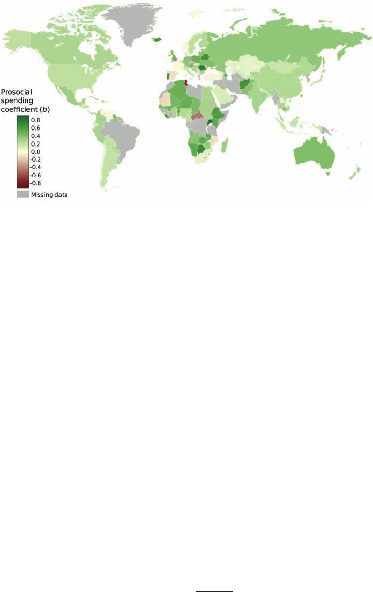
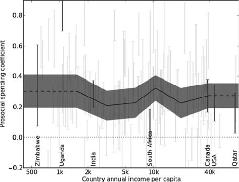

Prosocial Spending and Well-Being: Cross-Cultural Evidence for a
Psychological Universal
Lara B. Aknin
University of British Columbia
Christopher P. Barrington-Leigh
McGill University
Elizabeth W. Dunn and John F. Helliwell
University of British Columbia
Justine Burns
University of Cape Town
Robert Biswas-Diener
Positive Acorn, Milwaukie, Oregon
Imelda Kemeza
Mbarara University of Science and Technology
Paul Nyende
Makerere University
Claire E. Ashton-James
University of Groningen
Michael I. Norton
Harvard University
This research provides the first support for a possible psychological universal: Human beings around the
world derive emotional benefits from using their financial resources to help others (prosocial spending).
In Study 1, survey data from 136 countries were examined and showed that prosocial spending is
associated with greater happiness around the world, in poor and rich countries alike. To test for causality,
in Studies 2a and 2b, we used experimental methodology, demonstrating that recalling a past instance of
prosocial spending has a causal impact on happiness across countries that differ greatly in terms of wealth
(Canada, Uganda, and India). Finally, in Study 3, participants in Canada and South Africa randomly
assigned to buy items for charity reported higher levels of positive affect than participants assigned to buy
the same items for themselves, even when this prosocial spending did not provide an opportunity to build
or strengthen social ties. Our findings suggest that the reward experienced from helping others may be
deeply ingrained in human nature, emerging in diverse cultural and economic contexts.
Keywords: prosocial spending, happiness, psychological universal, prosocial behavior, well-being
Supplemental materials: http://dx.doi.org/10.1037/a0031578.supp
Warren Buffett, one of the richest people in the world, recently
pledged to give away 99% of his wealth, saying that he “couldn’t
be happier with that decision” (Buffet, 2010). Consistent with
Buffett’s claim, recent research suggests that financial generosity
may indeed promote happiness (e.g., Dunn, Aknin, & Norton,
2008). For Buffett, this striking act of generosity necessitated little
self-sacrifice; he noted that “my family and I will give up nothing
we need or want by fulfilling this 99% pledge,” whereas for other
people, “the dollars [they] drop into a collection plate or give to
United Way mean forgone movies, dinners out, or other personal
This article was published Online First February 18, 2013.
Lara B. Aknin, Department of Psychology, University of British
Columbia, Vancouver, Canada; Christopher P. Barrington-Leigh,
School of Environment and the Institute for Health and Social Policy,
McGill University, Montreal, Quebec, Canada; Elizabeth W. Dunn,
Department of Psychology, University of British Columbia; John F.
Helliwell, Department of Economics, University of British Columbia;
Justine Burns, School of Economics, University of Cape Town, Cape
Town, South Africa; Robert Biswas-Diener, Positive Acorn, Mil-
waukie, Oregon; Imelda Kemeza, Department of Psychology, Mbarara
University of Science and Technology, Mbarara, Uganda; Paul Nyende,
Department of Mental Health and Community Psychology, Makerere
University Institute of Psychology, Kampala, Uganda; Claire E.
Ashton-James, Department of Psychology, University of Groningen,
Groningen, the Netherlands; Michael I. Norton, Marketing Unit, Har-
vard Business School, Harvard University.
The authors thank Benjamin Bluman, Michael Gill, Anthony Harris,
Steve Heine, Joe Henrich, Ara Norenzayan, Jason Riis, and Gerry Tellis for
their help. The authors are also grateful to the Gallup Corporation for
providing access to the Gallup World Poll data.
Correspondence concerning this article should be addressed to Lara B.
Aknin, who is now at the Department of Psychology, Simon Fraser
University, 8888 University Drive, Burnaby, British Columbia V5A 1S6,
Canada. E-mail: laknin@sfu.ca
Journal of Personality and Social Psychology © 2013 American Psychological Association
2013, Vol. 104, No. 4, 635– 652 0022-3514/13/$12.00 DOI: 10.1037/a0031578
635
pleasures” (Buffett, 2010). Of course, in many parts of the world,
spending one’s limited financial resources on others may mean
sacrificing more than just movies and dinners out. Does spending
money on others promote happiness even in relatively impover-
ished areas of the world?
Although this question cannot be easily answered on the basis of
existing empirical research—which has been conducted almost
exclusively in wealthy countries such as the United States and
Canada—there are theoretical reasons to expect that financial
generosity should promote subjective well-being around the world.
In particular, evolutionary theorists have argued that the evolution
of altruistic behavior was essential in producing the large-scale
social cooperation that allowed early human groups to thrive
(Darwin, 1871/1982; Henrich & Henrich, 2006; Tomasello, 2009;
Wilson, 1975). If the capacity for generosity favored survival in
our evolutionary past, it is possible that engaging in generous
behavior might produce consistent, positive feelings across diverse
cultural contexts—akin to the pleasurable feelings associated with
other adaptive behaviors such as eating and sexual intercourse.
Building on this logic, we suggest that using financial resources to
help others may yield similar emotional benefits across diverse
cultural contexts, such that deriving happiness from prosocial
spending is a psychological universal.
Prosocial Spending and Happiness
Although generosity can assume many forms, giving to others
frequently involves sacrificing money or time (Liu & Aaker,
2008). We focused our investigation specifically on the impact of
prosocial spending on happiness, which has been posited to lead to
a “warm glow” on the part of givers (Andreoni, 1989, 1990;
Harbaugh, 1998). Providing initial evidence for the rewarding
property of financial generosity, research conducted with a sample
of more than 600 North Americans demonstrated that devoting
more money to prosocial spending (on gifts for others and chari-
table donations) was correlated with greater well-being, even when
controlling for income. It is important to note that this link is
causal: North American students who were randomly assigned to
spend a small windfall on others were significantly happier at the
end of the day than those assigned to spend money on themselves
(Dunn et al., 2008).
But does this relationship between prosocial spending and hap-
piness extend beyond North American samples, emerging in both
poor and rich countries? Cross-cultural research has shown that the
within-country correlation between how much money individuals
make and their happiness varies according to a country’s average
income (e.g., Deaton, 2008; Diener & Biswas-Diener, 2002). This
suggests that the link between how individuals spend that money
and their happiness might also differ between poor and wealthy
countries. In particular, it would be reasonable to expect that the
emotional benefits of spending money on others observed in North
America might be diminished or even eliminated within very poor
countries, where people might be more concerned with satisfying
their own basic needs (Martin & Hill, 2012).
We proposed, however, that the relationship between prosocial
spending and happiness is robust and occurs regardless of differ-
ences between countries in wealth or in the specific form that
prosocial spending takes. Indirect support for a universal link
between prosocial spending and happiness derives from a range of
research traditions. Children as young as 2 years old show a variety
of prosocial behaviors, such as sharing, helping, and comforting
others (Zahn-Waxler, Radke-Yarrow, Wagner, & Chapman,
1992). Both human infants and chimpanzees will provide instru-
mental help to a stranger even when no reward can be expected for
helping (Warneken & Tomasello, 2006), and children as young as
2 years old exhibit increased happiness when giving a valued
resource away (Aknin, Hamlin, & Dunn, 2012), suggesting that
humans and our nearest evolutionary relatives may find helping
others inherently rewarding. Similarly, experiences of acute stress
increase prosocial behavior in men, supporting the possibility that
kind acts offer emotional or recuperative benefits (von Dawans,
Fischbacher, Kirschbaum, Fehr, & Henrichs, 2012). Among older
adults, providing help to others predicts decreased risk of morbid-
ity and mortality (Brown, Nesse, Vinokur, & Smith, 2003; Brown,
Consedine, & Magai, 2005). In addition, prosocial behavior has
been linked to a set of brain regions implicated in the experience
of reward, including the orbital frontal cortex and ventral striatum
(Harbaugh, Mayr, & Burghart, 2007; Moll et al., 2006; Tankersley,
Stowe, & Huettel, 2007), again suggesting a basic reinforcing
property for generosity. Thus, while there is no question that
individuals often behave selfishly, previous research provides sug-
gestive evidence that human beings may also have a proclivity to
experience emotional benefits from giving to others.
Psychological Universals
Psychological universals are defined as “core mental attributes
shared by humans everywhere” (Norenzayan & Heine, 2005, p.
763) and can be classified into several categories, including ac-
cessibility universals, which appear everywhere with little or no
cultural variation, and functional universals, which are potentially
detectable in all cultures but that may vary in degree of expression
according to the cultural context. Norenzayan and Heine (2005)
argued that few psychological phenomena are likely to meet the
stringent threshold for classification as accessibility universals
(i.e., absence of any meaningful cultural variation). We proposed
that the positive relationship between prosocial spending and well-
being is a functional universal.
To illustrate the concept of a functional universal, Norenzayan
and Heine (2005) pointed to Buss’s (1989) cross-cultural survey of
gender differences in mate preference. Buss (1989) found that men
and women seek distinct characteristics in mates: men seek chaste
and attractive women, whereas women seek financially successful
men. Although these preferences are detectable in most countries
around the world, there is substantial variation across cultures
(e.g., gender differences in seeking financial success are twice as
large in Nigeria as in Belgium). Thus, while gender is related to
mating cue preferences around the world, the size of the effect
varies—reflecting a functional universal. In addition, the specific
manifestations of mating cues vary across cultures (e.g., a large
herd of cattle may signal financial success in parts of Africa,
whereas owning a beachside mansion may provide a parallel signal
in North America). Similarly, we anticipated that prosocial spend-
ing would be related to happiness across diverse cultures but that
both the size of this relationship and the specific manifestations of
prosocial spending would vary across cultures.
Norenzayan and Heine (2005) noted that the field of psychology
lacks a “a set of agreed upon methodological criteria by which we
636
AKNIN ET AL.
can consider universals,” such that “researchers have largely relied
on appeals to their readers’ intuitions as to what kind of data would
strengthen the case for universality” (p. 766). In response, Noren-
zayan and Heine (2005) proposed that researchers should gather
evidence for universals by (a) surveying individuals across a
diverse array of the world’s countries (which generally necessi-
tates the use of brief questionnaire-based correlational analyses)
and (b) conducting experimental studies within two or three cul-
tures that differ substantially on key dimensions.
In the present research, we applied this “gold standard” strategy
of converging evidence to test the hypothesis that prosocial spend-
ing is linked to subjective well-being across cultures. Although the
countries we studied differ on numerous dimensions, we were
primarily interested in the key dimension of national-level income,
which has been shown to play a critical moderating role in shaping
the relationship between individuals’ wealth and well-being within
countries, as discussed earlier; therefore, we examined the emo-
tional benefits of prosocial spending among individuals from
countries with various ranges of income, extending previous re-
search by examining the impact of prosocial behavior around the
world. We expected that the relationship between prosocial spend-
ing and well-being would represent a functional universal, such
that spending money on others would be positively associated with
happiness in most countries around the world, though this rela-
tionship may vary in strength. Indeed, if prosocial spending is
manifested differently in diverse cultures—akin to financial suc-
cess cues described earlier—but linked to greater happiness across
them, this would provide strong evidence that the warm glow of
giving is a robust component of human psychology.
Defining Happiness and Prosocial Spending
Following Diener and colleagues (e.g., Diener, 2000; Diener,
Oishi, & Lucas, 2003; Diener & Scollon, 2003), we viewed sub-
jective well-being (SWB) as including both affective (e.g., positive
emotion) and cognitive (e.g., life satisfaction) components. Diener
and Scollon (2003) noted, “Whether emotions or cognitions, all
forms of SWB represent the person’s evaluation of his or her life,
whether at the moment or across time” (p. 4). Because no single
measure of SWB captures all facets of this broad construct (Die-
ner, 1984), researchers in this area recommend using multiple
measures of SWB in order to investigate whether similar effects
emerge (Biswas-Diener, Kashdan, & King, 2009; Diener &
Biswas-Diener, 2002; Kashdan, Biswas-Diener, & King, 2008).
We adopt this broad approach to SWB in the present research—
assessing both the affective and cognitive components of SWB
with multiple measures across studies—and we use the terms
happiness and SWB interchangeably.
Also, following past research (Aknin, Dunn, & Norton, 2012;
Aknin, Sandstrom, Dunn, & Norton, 2011; Dunn et al., 2008), we
defined prosocial spending broadly, as money spent on others.
This definition includes donations to charities, gifts for friends and
family, and a wide range of other expenditures, such as buying
coffee for an acquaintance. Of course, the behaviors people un-
dertake when engaging in prosocial spending may also trigger
additional routes to well-being, such as fostering social relation-
ships (Baumeister & Leary, 1995; Diener & Oishi, 2005; Diener &
Seligman, 2002) and acquiring new life experiences (Van Boven &
Gilovich, 2003). However, we argue—and later provide experi-
mental evidence to demonstrate—that the emotional benefits of
prosocial spending can accrue above and beyond the contribution
of these previously documented sources of well-being. In addition,
although we defined prosocial spending broadly, we narrowed our
operationalization in Study 3 to examine the emotional conse-
quences of purchasing material items for unknown recipients in the
absence of social praise, design features that decrease the likeli-
hood that the well-being benefits of prosocial spending are entirely
due to creating social connections or buying experiences. Note that
the definition of prosocial spending is behavioral rather than
motivational: while prosocial behavior has been defined as an act
performed to benefit another person (Penner, Dovidio, Piliavin, &
Schroeder, 2005), altruism is defined as “a motivational state with
the end goal of increasing another’s welfare” (Batson & Shaw,
1991, p. 108). Given the difficulties and ambiguities inherent in
assessing the underlying reasons for behavior, we focused our
investigation on the emotional benefits of spending money on
others, rather than on people’s underlying motivations for perform-
ing these actions.
The Present Studies
We present four studies that use multiple methods to examine
whether humans around the world experience hedonic benefits
from generous spending. In Study 1, we conducted correlational
analyses to demonstrate a relationship between prosocial spending
and well-being across 136 countries that spanned a wide range of
income levels. We then narrowed our focus to four of these
countries—Canada (Studies 2a and 3), Uganda (Studies 2a), India
(Study 2b), and South Africa (Study 3)—that differ on the key
dimension of income. In Studies 2a and 2b, we show that recalling
a past instance of prosocial spending has a consistent and causal
impact on happiness in three economically diverse countries: Can-
ada, Uganda, and India. Finally, in Study 3, we show that buying
a small gift for charity leads to higher levels of positive affect than
buying the same gift for oneself in Canada and South Africa, even
when no one else is aware of the generous act and the benefactor
has no contact with the beneficiary.
Study 1: Correlational Study
Method
Sample. To examine the correlation between prosocial spend-
ing and subjective well-being within a large number of countries,
we used data collected from 136 countries between 2006 and 2008
as part of the Gallup World Poll (GWP; total N ϭ 234,917,
M
age
ϭ 38 years, SD ϭ 17; 49% male). The sample represents
over 95% of the world’s adult population (age 15 and older) and
provides an exceptionally large and diverse snapshot. The data are
collected from randomly selected, nationally representative sam-
ples with a mean size of 1,321 individuals per country (SD ϭ 730,
range ϭ 141– 4,437). These samples include residents from cities,
towns, and rural areas, thus representing the population of an entire
country. In wealthier regions, respondents are selected through
random-digit dialing for a 30-min interview. In poorer regions,
respondents are selected with random geographic sampling for a
1-hr face-to-face interview. All survey materials are presented in
the local language; materials are back-translated (e.g., from Eng-
637
PROSOCIAL SPENDING AND WELL-BEING

lish to German and then from German to English) to ensure
accuracy.
Measures.
Prosocial spending. The GWP asks respondents whether they
have donated money to charity in the past month. We used dichot-
omous responses (yes/no) to this question as our index of prosocial
spending.
Subjective well-being (SWB). Two questions in the GWP
measure respondents’ subjective assessment of their life overall:
First, in most countries and waves of the GWP, respondents are
asked to evaluate their lives using the Cantril ladder (Cantril,
1965). Ratings on this scale require respondents to imagine a
ladder with 11 steps (from 0, worst possible life, to 10, best
possible life) and report which step best represents their life.
Second, in 2007 and 2008, respondents in approximately half of
the countries completed a single-item measure of life satisfaction,
on which respondents rate how satisfied they are with their life as
a whole on an 11-point scale- (0, dissatisfied,to10,satisfied).
Consistent with recent research (Helliwell, Barrington-Leigh, Har-
ris, & Huang, 2010), we used each individual’s response(s) to one
or both of these questions—taking the average when both re-
sponses were present—as our measure of SWB.
Income and demographics. The GWP records respondents’
household income. We used the natural logarithm of household
income in our within-country estimates, which do not rely on
international exchange rate or purchasing power calculations.
Where we did compare incomes at the international level, we
used the average GDP per capita expressed in 2007 U.S. dollars,
based on purchasing power parity values from the World Bank
(see Deaton, 2008, for similar methods and income compari-
sons, including a discussion of the empirically preferred loga-
rithmic form of income). As an additional measure of income
and material consumption, respondents are asked if there has
been a time in the last year when they have had trouble securing
food for their family. Respondents also provide demographic
information, including gender, age, marital status, and educa-
tion level.
Results
Within-country equation. We examined (using Stata soft-
ware Version 10) the relationship between SWB and prosocial
spending while controlling for household income and whether
respondents had lacked enough money to buy food in the past 12
months. We also controlled for demographic variables (age, gen-
der, marital status, and education level). To begin with the most
stringent test of universality, we estimated a regression equation
1
separately for each country, pooled over years 2006 –2008. The
equation estimated separately for each country is of the form:
SWB
i
ϭ c
0
ϩ a log
͑
Income
i
͒
ϩ b Donated
i
ϩ c Food
i
ϩ X
i
'
d
ϩg dNoSWL
i
ϩ⌺yrh
yr
dWave
yr,i
ϩ
l
(1)
for individual i. The coefficient b represents the relationship
between individual life evaluation (SWB
i
) and donating to charity
(Donated
i
), while controlling for household income (Income
i
),
reported food inadequacy (Food
i
), an indicator for each wave
(year) of the Gallup World Poll, the remaining demographic vari-
ables (X
i
), and an indicator (dNoSWL
i
) to account for whether one
or two measures of life evaluation were available for the individ-
ual. Thus, this equation examines the relationship between proso-
cial spending and SWB reports at the individual level while
controlling for household income, food inadequacy, age, gender,
marital status, and education across various waves of the GWP and
measures of well-being.
The relationship between prosocial spending and SWB is pos-
itive in 120 out of 136 countries included in the Gallup World Poll,
with this relationship reaching traditional levels of significance
(p Ͻ .05) in some 59% of these 120 countries (Figure 1; see also
Tables S2 and S3 in the online supplemental materials for indi-
vidual country estimates). In a pooled global estimate, the proso-
cial spending coefficient, b ϭ 0.27, p Ͻ .03, exceeds half the
coefficient of log income, b ϭ 0.41, p Ͻ .03. Thus, in this model,
donating to charity has a similar relationship to SWB as a doubling
of household income. That is, in order for someone who does not
report prosocial spending to have the same predicted SWB as
someone who does, their income would need to be twice as high
(other things equal).
2
Although rates of prosocial spending are
higher in wealthier countries, r(134) ϭ 0.54, p Ͻ .001, the size of
the relationship between prosocial spending and SWB that
emerges within countries is unrelated to rates of donation,
r(134) ϭ –.10, p ϭ .23, or to the countries’ mean incomes,
r(134) ϭ –.09, p ϭ .31, suggesting that generous financial behav-
ior is linked to well-being in poor and rich countries alike.
Although these findings point to the robustness of the relation-
ship between prosocial spending and SWB in economically and
culturally diverse areas of the world, this relationship failed to
reach significance in a considerable number of individual coun-
tries. Because our ability to detect a significant relationship be-
tween prosocial spending and SWB within each country is limited
by the sample size at the country level, we conducted a power
analysis for this coefficient using Stata software Version 10; given
the median variance explained by the donation variable across
countries, a sample of 1,900 respondents would be required to
produce a significant (p Ͻ .05) within-country coefficient 80% of
the time. Applying this threshold, we found that among the subset
of 23 countries with samples of at least 1,900 respondents, the
estimate of prosocial spending is significantly positive in 20
(87%).
Another means of maximizing power while encompassing the
full diversity of our sample is to aggregate countries into seven
1
Consistent with other recent research analyzing SWB data in the
Gallup World Poll (Deaton, 2008; Diener, Ng, Harter, & Arora, 2010), we
chose to utilize ordinary least squares regression analyses. This analytic
strategy has been validated against a number of other methods for analyz-
ing the determinants of happiness (Ferrer-i-Carbonell & Frijters, 2004). In
a later section, we extend our ordinary least squares estimates to achieve a
multilevel model allowing for variation in the main effect across countries
in accordance with a national-level variable. That is, we use a set of
interaction terms between individual donations and several indicator vari-
ables denoting whether a given national variable (e.g., gross domestic
product/capita) is in a given range.
2
Although the raw coefficient of log income is higher than that of
prosocial spending, the logarithmic form of income means that large
multiplicative changes in income are required to have a large effect on
predicted SWB. Quantitatively, in order to increase SWB by as much as the
predicted effect of prosocial spending, log income would need to increase
by the ratio of coefficients, .27/.41 ϭ .66. Therefore, income would need
to increase by a factor of exp(.27/.41) ϭ 1.93.
638
AKNIN ET AL.

major cultural/geographic regions used by Gallup in designing its
World Poll (see Helliwell et al., 2010). When averaged within each
region,
3
the estimates for prosocial spending are significant in
each: Africa (b ϭ 0.29, p Ͻ .001), Asia (b ϭ 0.20, p Ͻ .001),
Europe (b ϭ 0.27, p Ͻ .001), the former Soviet Union and Eastern
Europe (b ϭ 0.33, p Ͻ .001), Latin America (b ϭ 0.22, p Ͻ .001),
Persia and the Middle East (b ϭ 0.18, p Ͻ .05), and the United
States of America, Canada, Australia, and New Zealand (b ϭ 0.30,
p Ͻ .001).
It is possible that respondents’ answers to the donation question
may be influenced by factors such as their financial security.
Although we control for income, discretionary spending can pro-
vide an alternative indicator of wealth (Rutstein & Johnson, 2004).
Because charitable donations represent one form of discretionary
spending, the relationship between charitable donations and hap-
piness may in part reflect a relationship between wealth and SWB.
If this is the case, then controlling for other measures of wealth or
material consumption should affect the relationship between char-
itable donations and SWB. However, when we control for both
income and food inadequacy (which provides an additional mea-
sure of material consumption) the prosocial spending coefficient
(b ϭ 0.27) is almost identical to the coefficient when these controls
are absent (b ϭ 0.26). These findings cast doubt on the possibility
that prosocial spending predicts happiness primarily because it
captures individual differences in wealth.
4
Multilevel modeling. While the previous analyses demon-
strate that the relationship between prosocial spending and SWB is
positive in most individual countries and all major regions of the
world, we do not suggest that it emerges to precisely the same
extent everywhere. Rather, we hypothesized that the relationship is
robust throughout diverse regions of the world and, more specif-
ically, robust in both poor and rich countries. To examine the role
of national-level income more thoroughly in a multilevel frame-
work, we next estimated a global (pooled) model in which the
effect of prosocial spending is allowed to vary nonparametrically
(i.e., without assuming any particular relationship, such as a linear
one) as a function of national-level income, again using Stata
software Version 10.
SWB
i
ϭ c
0
ϩ a log
͑
Income
i
͒
ϩ b
͑
GDP
͒
Donated
i
ϩ c Food
i
ϩ X
i
'
dϩg dNoSWL
i
ϩ⌺yrh
yr
dWave
yr,i
ϩ
l
(2)
In Equation 2, the prosocial spending coefficient b may vary across
countries as a function of national income (measured as purchasing
power per capita). The estimate of Equation 2 is carried out as a
standard linear regression in which the prosocial spending variable is
set to interact with indicators for consecutive ranges of the national
income variable. This equation allowed us to examine whether na-
tional income moderates the emotional benefits of prosocial spending
across countries. Figure 2 displays the relationship between prosocial
spending and SWB across a range of country incomes (measured as
mean purchasing power per capita). In this figure, we averaged
responses from multiple countries, thereby increasing the sample size,
and found that the estimated prosocial spending coefficient was then
uniformly and significantly positive ( p Ͻ .001); indeed, it was re-
markably uniform in magnitude along the entire range of incomes.
Although the positive relationship between prosocial spending and
well-being clearly varied in size when each country was examined
independently (as shown in Figure 1), these results indicated that the
size of this relationship is consistent across poor and rich countries
overall (Figure 2).
Exploratory analyses. Although we were primarily interested
in examining whether the link between prosocial spending and
happiness was robust for individuals and nations across the income
spectrum, we also explored whether this link remained significant
when we controlled for other variables related to well-being.
Specifically, we selected three variables available in the GWP that
were identified in a recent report as leading predictors of well-
3
These means are calculated using confidence weights from the
country-level estimates and are shown in Table S2 in the supplemental
online materials. We also carried out pooled estimates directly at the region
level and found highly similar results, again significant in each region
(Table S5 in supplemental online materials).
4
The relationship between prosocial spending and SWB also remains
significant if we estimate a simpler equation that lacks demographic
information as well (see Table S4 in the supplemental online materials).
Figure 1. World map display of prosocial spending coefficients.
639
PROSOCIAL SPENDING AND WELL-BEING

being around the world (Layard, Clark, & Senik, 2012): social
support, perceived freedom, and perceived corruption. When all
three individual-level variables were entered into Equation 1 si-
multaneously, the effect of prosocial spending on life satisfaction
remained largely unchanged (b ϭ 0.22, p Ͻ .001). Next, we
explored whether differences between countries in social support,
perceived freedom, or perceived corruption explained variability
across countries in the relationship between prosocial spending
and happiness. To do so, we estimated subjective well-being in the
GWP data using a global equation like Equation 2, but replaced
country-level income with each of these three variables. We con-
ducted separate regressions for each of these three variables and
examined the interaction between each variable (e.g., perceived
freedom) and prosocial spending. None of the interaction terms
were significant (b values from – 0.17 to 0.12, ps Ͼ .10) and the
prosocial spending coefficient remained at least marginally signif-
icant in all analyses (b values from 0.18 to 0.39, ps Ͻ .10). Thus,
our results demonstrated that country-level variations in social
support, freedom, and corruption do not explain the differences
observed in the emotional rewards of prosocial spending around
the world.
Discussion
Examining over 200,000 respondents drawn from 136 countries,
we found that prosocial spending is linked to higher SWB around the
world. This effect emerges in both poor and rich nations, although the
size and significance of this relationship vary among individual coun-
tries. The variability we observed between countries suggests that this
relationship does not meet the stringent threshold for classification as
an accessibility universal, but the fact that this relationship is detect-
able in diverse regions of the world provides support for the argument
that the warm glow of giving is a functional universal (akin to the
relationship between gender and mating preferences). Thus, Study 1
provides the first empirical evidence that the warm glow of prosocial
spending may be a widespread component of human psychology
rather than limited to affluent countries such as the United States and
Canada— both characterized by a level of material wealth unimagi-
nable throughout most of human history. The robustness of the
observed relationship is particularly notable, given that prosocial
spending was assessed with a one-item dichotomous measure, sug-
gesting that the effect may prove even more ubiquitous if this con-
struct were to be assessed with more in-depth measures tailored to
each country.
Our analyses also demonstrate that the relationship between
prosocial spending and SWB remains robust when controlling for
demographic variables, as well as other leading predictors of
SWB, including social support, perceived freedom, and perceived
corruption. The robustness of this relationship notwithstanding, its
strength did vary considerably between countries, and this vari-
ability was not explained by national-level differences in any of
the variables we examined (income, social support, perceived
freedom, perceived corruption) Thus, determining why the rela-
tionship between prosocial spending and happiness is stronger in
some parts of the world than in others represents an important goal
for future research.
Because Study 1 relied on correlational analyses, these find-
ings are inevitably subject to alternative explanations, such that
establishing the causal impact of prosocial spending on happi-
ness necessitates the use of experimental design. Therefore, we
next used experimental methodology and narrowed our focus to
two countries, Canada and Uganda. These two counties differ
substantially in terms of our key variable of interest, per capita
income (with Canada falling in the top 15% and Uganda falling
in the bottom 15% of countries surveyed in Study 1), as well as
frequency of prosocial spending (66% of respondents reported
donating in Canada vs. 13% in Uganda). In addition, moving
beyond the narrow measure of prosocial spending used in Study
1— charitable giving—we broadened our operationalization of
this construct in Studies 2a and 2b, assessing the different forms
that prosocial spending takes in different cultural contexts. This
broader construal of prosocial spending includes all types of
spending on others, such as taking a friend to lunch, and
provides a fuller and more ecologically valid representation of
generous financial behavior. Of course, spending on others
versus oneself differs on multiple dimensions; in particular, it is
likely that prosocial spending is intended to foster social rela-
tionships, an independent predictor of well-being (e.g.,
Baumeister & Leary, 1995; Diener & Oishi, 2005; Diener &
Seligman, 2002). We therefore assessed this construct with
coder ratings (Study 2a) and self-report (Study 2b) to show that
the effect of prosocial spending on happiness emerges even
when intentions to build or improve a social relationship are
controlled.
Study 2a: Experimental Study in Canada and Uganda
To test the causal impact of prosocial spending on happiness,
we randomly assigned participants in Canada and Uganda to
write about a time they had spent money on themselves (per-
sonal spending) or on others (prosocial spending). This
Figure 2. Each vertical line represents the 95% confidence interval for
the prosocial spending coefficient within an individual country (from
Equation 1); countries of particular interest are in bold. These lines are
graphed in order of country income (in 2007 purchasing power parity in
U.S. dollars), from low to high. The shaded area shows the 95% confidence
interval for the prosocial spending coefficients in each range of national
income. The dashed lines show the extension of the range of the smallest
and largest income groups estimated.
640
AKNIN ET AL.

reminiscence-based methodology has been used successfully in
previous research to study the long-term emotional conse-
quences of real-world spending experiences (e.g., Carter &
Gilovich, 2010; Van Boven & Gilovich, 2003). We assessed
participants’ happiness following this task and coded their
responses for the specific form that their personal and prosocial
purchases had taken.
Method
Participants. A total of 820 individuals participated: 140 stu-
dents from the University of British Columbia in Vancouver,
Canada (M
age
ϭ 20.0 years, SD ϭ 3.9; 54% females), 105 students
from Mbarara University in Mbarara, Uganda (M
age
ϭ 21.7 years,
SD ϭ 2.6; 24% females), 382 students from Makerere University
in Kampala, Uganda (M
age
ϭ 23.0 years, SD ϭ 4.1; 72% females),
and 193 adults from the city of Kampala, Uganda (M
age
ϭ 27.7
years, SD ϭ 7.8; 51% females).
Procedure. Participants were approached on a university
campus or in the city of Kampala and randomly assigned to recall
a recent purchase in which they spent either 10,000 Ugandan
shillings or 20 Canadian dollars on themselves (personal spending
condition) or someone else (prosocial spending condition); these
amounts represented approximately equal buying power in Uganda
and Canada, respectively. After describing the spending experi-
ence in detail using a procedure designed to elicit vivid reminis-
cence (Strack, Schwarz, & Gschneidinger, 1985), participants
were asked to report their happiness on the Subjective Happiness
Scale (SHS), a four-item measure of subjective well-being that has
been used with samples around the world (␣ϭ.70; Lyubomirsky
& Lepper, 1999). All study materials were provided in English and
edited by local collaborators to ensure that questions would be
comprehensible and interpreted consistently in both Canada and
Uganda. Despite these methodological precautions, it is well
known that people in different cultural contexts may use differen-
tial response sets in rating themselves on subjective Likert-type
scales (e.g., Bond, 1988; Heine, Lehman, Peng, & Greenholtz,
2002). Therefore, following procedures recommended to mitigate
this problem (Bond, 1988; Heine, 2008; Leung & Bond, 1989), we
z-scored responses on the SHS within each country prior to pool-
ing our data across countries.
5
Coding. Participants’ spending descriptions were coded by
undergraduate research assistants (RAs) blind to participants’ as-
signed condition and happiness scores, as well as the goals of the
study. All spending experiences were coded by four Canadian
RAs,
6
with a subset rated by a Ugandan coder to check for
cross-cultural consistency in interpretation; the Ugandan coder’s
ratings were highly correlated with the ratings of the four Canadian
coders, average r(88) ϭ .65, p Ͻ .01. Spending descriptions were
rated on three major dimensions (see Table 1): (a) the social
contexts of the purchase (e.g., Was the spender trying to strengthen
a social relationship with this purchase?; coded as 1 ϭ yes or 0 ϭ
no), (b) to what extent the spending purchase appeared to be driven
by specific spending motives (rated on a scale from 1 to 7: 1 ϭ
need vs. 7 ϭ want or 1 ϭ obligation vs. 7 ϭ volition), and (c)
whether the purchase included certain goods or activities (e.g.,
food, clothing, transportation, an experience, or medical costs or
supplies; coded as 1 ϭ included or 0 ϭ not included). To achieve
an appropriate level of interrater reliability, the RAs coded an
initial subset of spending descriptions along the dimensions listed
previously and discussed their coding to resolve inconsistencies.
Results
To investigate whether prosocial (vs. personal) spending in-
creased happiness across cultures, we submitted SHS ratings to a
2 (spending type: personal vs. prosocial) ϫ 2 (country: Uganda vs.
Canada) analysis of variance (ANOVA). As predicted, there was a
significant main effect of spending type, whereby participants
randomly assigned to recall a purchase made for someone else
(M ϭ 0.09, SD ϭ 1.00) reported significantly higher happiness
than participants assigned to recall a purchase made for themselves
(M ϭ – 0.09, SD ϭ 0.99), F(1, 784) ϭ 8.21, p ϭ .004,
p
2
ϭ .01.
The interaction of spending type and country was not significant,
F(1, 784) ϭ 1.88, p ϭ .17,
p
2
ϭ .002. Thus, participants in Canada
and Uganda reported higher levels of happiness when they thought
about spending money on others rather than themselves.
The higher levels of happiness reported by participants in the
prosocial spending condition were not simply a result of fostering
a social relationship. As expected, participants assigned to the
prosocial spending condition provided spending descriptions that
were rated by coders as more likely to build, F(1, 766) ϭ 4.03, p Ͻ
.05, and strengthen, F(1, 766) ϭ 318.32, p Ͻ .001, social relation-
ships than participants in the personal spending condition. How-
ever, adding coder ratings of either building new relationships or
strengthening old relationships as a covariate to the 2 (spending
type: personal vs. prosocial) ϫ 2 (country: Uganda vs. Canada)
ANOVA described previously leaves the main effect of spending
condition significant. Specifically, analyses reveal that prosocial
spending memories led to higher levels of happiness even when
controlling for coder ratings of strengthening old relationships,
F(1, 736) ϭ 3.72, p ϭ .05, or building new ones, F(1, 736) ϭ
10.95, p ϭ .001, suggesting that prosocial spending does not
increase happiness solely by improving relationships.
While the effect of prosocial spending on happiness emerged
consistently across participants in Canada and Uganda, we also
examined whether these same effects emerged within each country
independently. In the Canadian sample, we conducted an ANOVA
to compare the happiness of participants randomly assigned to the
two spending recall conditions. As expected, participants assigned
to recall a previous purchase made for someone else were signif-
icantly happier (M ϭ 0.20, SD ϭ 0.91) than participants assigned
to recall a previous purchase made for themselves (M ϭ –0.20,
5
In both Studies 2a and 3, the effect of prosocial spending on happiness
was substantively the same using raw happiness scores rather than stan-
dardized scores. Because the use of raw scores can produce spurious results
when the effect of one variable on another is examined across cultures (for
a discussion of this issue, see Bond, 1988), we report results using stan-
dardized scores.
6
Because the Ugandan community sample data were collected after the
three student samples, these data were coded by a separate team of four
Canadian RAs (also blind to participants’ assigned condition, happiness
scores, and goals of the study). This second group of coders applied the
same coding scheme to the Ugandan community sample data to ensure that
the second coding team applied the coding scheme similarly to the first
team, a total of 50 spending memories drawn from the Mbaraba, Kampala,
and University of British Columbia student samples were coded by the
second group of coders. The two coding teams showed high levels of
agreement across all items, average r(48) ϭ .83, p Ͻ .01.
641
PROSOCIAL SPENDING AND WELL-BEING
SD ϭ 1.05), F(1, 138) ϭ 5.58, p ϭ .02,
p
2
ϭ .04. In the Ugandan
sample, a similar analysis was conducted with an additional vari-
able indicating the subsample (student sample in Mbarara, student
sample in Kampala, and community sample in Kampala). Analy-
ses revealed that participants randomly assigned to the prosocial
spending recall condition reported higher levels of happiness (M ϭ
0.07, SD ϭ 1.02) than participants assigned to the personal spend-
ing recall condition (M ϭ – 0.07, SD ϭ 0.97), F(1, 642) ϭ 5.19,
p ϭ .023,
p
2
ϭ .008, and this main effect was not qualified by
an interaction between spending condition and subsample,
F(2, 642) ϭ 1.13, ns,
p
2
ϭ .004. The main effect of subsample was
significant, indicating that there were differences in happiness
levels across the three Ugandan samples, F(2, 642) ϭ 8.27, p Ͻ
.001,
p
2
ϭ .025.
Although the emotional benefits of prosocial spending emerged
in both countries, the specific ways in which participants spent
their money (as rated by coders) varied substantially between
cultures (see Table 1 for a full breakdown). For example, when
recalling a time they spent money on themselves, twice as many
participants in Uganda described purchasing a personal necessity,
compared with those in Canada. When recalling a time they spent
money on others, almost 15% of participants in Uganda described
a purchase that was made in response to a negative event, with
fully 9% purchasing medical supplies or services—whereas none
of the prosocial spending descriptions provided by the Canadian
participants fell into these categories. Given these important na-
tional differences in specific spending experiences, it is particu-
larly remarkable that spending money on others produced emo-
tional benefits in both countries. Further supporting the robustness
of this pattern, the main effect of spending condition on SWB
remained significant when controlling in the ANOVA for the
extent to which participants’ purchases were motivated by need
(vs. want), were obligatory (vs. volitional), represented a response
to a negative event, or provided an experience (e.g., going to a
movie), all Fs Ͼ 8.00, all ps Ͻ .005.
Discussion
Providing converging evidence for our central hypothesis, Study
2a demonstrated that people in both Canada and Uganda reported
greater happiness after recalling a time when they spent money on
others rather than themselves. By asking people to recall a past
spending experience, we were able to examine how people spent
their own money in their everyday lives, yielding a rich data set
that underscores the very different forms that prosocial spending
can assume as a function of the cultural context, akin to the
culturally specific mating cues described in the introduction. Given
the differences we observed between countries in the specific
nature of participants’ spending experiences, it is particularly
remarkable that prosocial spending produced benefits across both
countries.
Building upon these findings, we had four primary aims in
Study 2b. First, although Study 2a demonstrates that people feel
happier after reflecting on a time when they spent money on others
rather than themselves, the absence of a control condition makes it
difficult to ascertain whether the prosocial spending condition
made people feel better—as our account holds—or the personal
spending condition made people feel worse. We therefore included
a control condition in Study 2b in which participants were not
asked to reflect on a past spending experience. Second, we ex-
tended our experimental research to a third country, recruiting a
sample of Indian adults, a country where per-capita income is low
and where the relationship between prosocial spending and hap-
piness was relatively weak (though still significant) in Study 1.
Third, in order to further address the possibility that relationship
building drives the impact of prosocial spending on happiness, we
asked participants themselves to rate the extent to which purchases
served to strengthen or build social relationships—rather than
relying on coders as in Study 2a. Finally, we included a broader
range of well-being measures in Study 2b. Study 2a included only
the SHS, which we selected because it is brief, reliable, and
cross-culturally valid. The SHS was originally designed as a
global, trait-level measure (Lyubomirsky & Lepper, 1999). Al-
Table 1
Coder Reliabilities and Frequency Ratings by Recall Condition
and Home Country
Coding dimension (␣)
Type of spending
recalled (%)
Prosocial Personal
Purchase context
Purchase made to strengthen an old
relationship (.81)
Uganda 58.7
a
14.4
b
Canada 64.2
a
12.9
b
Purchase made to build a new relationship
(.63)
Uganda 3.3
a
1.2
b
Canada 3.0
a,b
1.1
a,b
Purchase made in relation to negative event
(.91)
Uganda 14.6
a
1.8
b
Canada 0.0
b
0.4
b
Purchase motivation
Need vs. want (.84): 1 ϭ need,7ϭ want
Uganda 4.58
a
4.65
a
Canada 6.19
c
5.17
b
Obligation vs. volition (.70): 1 ϭ obligation,
7 ϭ volition
Uganda 5.46
a
5.32
a
Canada 6.36
c
5.88
b
Purchase content
Personal necessities (.74)
Uganda 6.8
a
21.1
b
Canada 7.1
a
10.2
a
Food (.95)
Uganda 33.7
a
48.7
b
Canada 47.0
b
46.2
b
Transportation (.97)
Uganda 14.8
a
18.2
a
Canada 1.5
b
1.5
b
Medical items or related costs (.94)
Uganda 9.4
a
2.2
b
Canada 0.0
b
0.4
b
Clothing (.92)
Uganda 15.9
a
27.0
b
Canada 19.0
a,b
21.2
a,b
Experience (.78)
Uganda 17.0
a
21.6
a
Canada 15.7
a
14.8
a
Note. Superscript text denotes significant mean differences. Means with
the same superscript are not significantly different from one another at the
p ϭ .05 level.
642
AKNIN ET AL.

though trait-level measures of well-being are affected by state-like
feelings (Schwarz & Clore, 1983), we believed that our manipu-
lation likely would be detected best on a state measure specifically
designed to be sensitive to slight changes in mood. Indeed, we
suggest that our manipulation led people to feel happier, which led
them to evaluate their lives as being happier. To document this
process, we asked participants in Study 2b to complete both a
measure of positive affect and the SHS, as well the life satisfaction
measure from Study 1.
Study 2b: Experimental Study in India
Method
Participants. A total of 101 individuals from India (M
age
ϭ
28.4 years, SD ϭ 8.3; range ϭ 19–66, 43% females) completed
this study online through Amazon’s Mechanical Turk service; this
service has been shown to produce samples comparable to other
methodologies (Buhrmester, Kwang, & Gosling, 2011).
Procedure. Consistent with Study 2a, participants in the ex-
perimental conditions were assigned to recall a recent purchase in
which they spent money on themselves (personal spending condi-
tion) or someone else (prosocial spending condition); those in the
control condition proceeded directly to our happiness measures
without recalling a past spending experience.
7
To create a very
brief measure of current positive affect for use in India, we
selected the three items (excited, alert, active) that were most
strongly correlated with overall positive affect scores on the Pos-
itive Affect and Negative Affect Scales (PANAS; Watson, Clark,
& Tellegen, 1988) in other research we conducted in Uganda
(Aknin, Dunn, Norton, & Nyende, 2012). In addition, we added
the key word happy to create a reliable four-item index of positive
affect (␣ϭ.66). Participants then completed the SHS and the
one-item life satisfaction measure from the GWP. Afterward,
participants in the personal and prosocial spending conditions
reported the extent to which their spending experience was in-
tended to build or strengthen a social relationship on a single
10-point scale (0 ϭ not at all,9ϭ very much). Finally, all
participants reported their demographic information.
Results and Discussion
A one-way ANOVA revealed significant between-group differ-
ences in positive affect, F(2, 96) ϭ 3.44, p Ͻ .04,
p
2
ϭ .07. Using
least-significant-difference contrasts, we found that positive affect
levels reported by participants in the control condition (M ϭ 3.72,
SD ϭ 0.72) and personal spending condition (M ϭ 3.64, SD ϭ
0.49) were not significantly different from each other, p Ͼ .65;
most important, participants in the prosocial spending condition
reported higher levels of positive affect (M ϭ 4.11, SD ϭ 0.54)
than participants in either of the other conditions, ps Ͻ .04. Unlike
coder ratings in Study 2a, self-ratings of building and strengthen-
ing social relationships did not differ between the personal and
prosocial spending conditions (p Ͼ .35). Consistent with Study 2a,
however, an analysis of covariance (ANCOVA) confirmed that the
difference between the personal and prosocial spending condition
remained significant when controlling for participants’ own ratings
of the extent to which their purchases had built or strengthened
social relationships (p Ͻ .05).
Indirect effect of prosocial spending on trait measures of
SWB. Our manipulation did not produce significant differences
on either of our trait-level measures: SHS, F(2, 97) ϭ 0.85, p ϭ
.43,
p
2
ϭ .02, or life satisfaction, F(2, 98) ϭ 0.02, p ϭ .98,
p
2
ϭ .00.
The effect size of prosocial spending on the SHS in Study 2b (
p
2
ϭ
.02) was similar in magnitude to that found in Study 2a (
p
2
ϭ .01),
however, suggesting that the results in Study 2b may not be
significant due to our relatively smaller sample size. Moreover,
there was an indirect effect of condition on trait levels of happiness
via positive affect. Using bootstrapping analyses suggested by
Preacher and Hayes (2004, 2008), we found that the effect sizes for
both the SHS and life satisfaction measure were positive and the
indirect mediation model 95% confidence interval (CI) did not
cross zero: SHS effect size estimate .09, .95% CI [.07, .17], and
life satisfaction effect size estimate .25, .95% CI [.02, .48]. Thus,
participants experienced more positive affect after reflecting on a
past prosocial spending experience, which in turn led them to
evaluate their overall well-being and their lives in general more
positively.
Discussion
Taken together, Studies 2a and 2b provide evidence that proso-
cial spending has a causal impact on happiness in both poor and
rich countries (Uganda, India, and Canada). This effect emerged
even when we controlled for the extent to which the spending
experiences served to build or strengthen social relationships, as
rated by coders (Study 2a) or participants themselves (Study 2b).
Thus, while prosocial spending may enhance well-being in part by
fostering social relationships, the benefits of prosocial spending
are unlikely to be explained entirely by the well-known link
between social relationships and SWB. Of course, asking partici-
pants to report the extent to which they had built or strengthened
a social relationship may not completely rule out this alternative
explanation. It is possible, for example, that participants may not
remember the goal of a previous purchase or may fail to report an
intention to foster social relationships to avoid acknowledging
alternative motivations for generous spending. More broadly, the
present studies are limited by their reliance on participants’ retro-
spective accounts of past generous spending behavior.
To build upon the two recollection experiments, we designed
Study 3 to fulfill three main aims. First, in Study 3, we examined
the effect of actual financial decision making on individuals’
in-the-moment affective experience within a controlled context
that removed the opportunity for relationship building. Study 3
documented the immediate causal impact of prosocial spending by
measuring positive affect after participants were randomly as-
signed to purchase a “goody bag” for either themselves or a sick
child at a local hospital. So that the possibility of relationship
building could be ruled out, participants did not interact with the
7
Due to the limits of our online survey administration tool, we used
quasi-random assignment, based on the day of the month (1st–10th, 11th–
20th, 21st–31st) that participants were born; unfortunately, this resulted in
uneven cell sizes. Despite uneven cells, the data did not violate the
assumption of homogeneity of variance, making our statistical tests robust
to Type I error inflation.
643
PROSOCIAL SPENDING AND WELL-BEING
recipient of their gift, nor did the researchers or the other partici-
pants know whether they had engaged in prosocial or personal
spending. As a result, this design allowed us to examine the
emotional benefits of what might be considered the purest form of
prosocial spending—charitable giving—when spenders could not
build social relationships or receive social praise. Second, Study 3
was designed to rule out the possibility that prosocial spending is
more enjoyable simply because it more frequently involves pur-
chasing experiences (rather than material goods), an independent
predictor of happiness from purchasing (Carter & Gilovich, 2010;
Van Boven & Gilovich, 2003). Therefore, all participants in Study
3 were given the opportunity to purchase a material item: a goody
bag. Finally, in Study 3, we also extended our findings to a fourth
country, South Africa, where per-capita income is relatively low
and where the relationship between prosocial spending and hap-
piness was positive (though nonsignificant) in Study 1.
To maximize experimental control, we conducted Study 3 in the
laboratory, recruiting a student sample for reasons of feasibility.
To confirm that our student samples reflected the broader cultural
and economic milieu of their home countries, however, we asked
students in Study 3 to complete items from the World Values
Survey (World Values Survey Association, 2009) and Gallup
World Poll. We then compared students’ responses to the re-
sponses provided by nationally representative samples of adults in
their home countries.
Study 3
Participants in Canada and South Africa were randomly as-
signed to buy a goody bag filled with treats for either themselves
(personal spending) or a sick child at a local children’s hospital
(prosocial spending). We assessed participants’ happiness before
and after this task to investigate whether prosocial spending led to
higher levels of happiness than personal spending, even when
spending could not build or foster social ties.
Method
Participants. A total of 207 students participated: 86 students
from the University of British Columbia in Vancouver, Canada
(M
age
ϭ 21.1 years, SD ϭ 4.6; 74% females) and 121 students
from the University of Cape Town in Cape Town, South Africa
(M
age
ϭ 20.2, SD ϭ 2.1; 54% females). Participants were reim-
bursed with course credit (in Canada) or prepaid cell phone min-
utes (in South Africa); remuneration methods were consistent with
local norms for encouraging research participation.
Procedure. Participants were recruited through online partic-
ipant pools for a group data collection sessions. Upon arrival in the
lab, participants were instructed to sit by themselves at a desk
without talking to any other participants. They completed a ques-
tionnaire assessing their baseline level of happiness on both a state
(“Do you feel happy right now?”; from 1, not at all,to5,ex-
tremely) and trait (“In general, I consider myself...”;from 1, not
a very happy person,to7,a very happy person) measure (Ly-
ubomirsky & Lepper, 1999). Scores on these two items were
highly correlated, r(200) ϭ .43, p Ͻ .001, so we standardized and
averaged participants’ responses to these items as our baseline
measure of happiness.
Next, participants read that they had been given additional
compensation for their participation in the form of a payment
voucher for $2.50 in Canada or its equivalent in South Africa, 20
rand. All participants signed a receipt acknowledging their pay-
ment and then learned that they could buy a goody bag that had an
actual retail value of $3.00 (or 25 rand) for just $2.50 (or 20 rand);
the stated value of the goody bag exceeded the value of the
voucher to encourage participants to make the purchase. Partici-
pants randomly assigned to the personal spending condition were
informed that they could purchase the goody bag for themselves,
whereas participants in the prosocial spending condition were
informed that they could purchase the goody bag for a sick child
at the nearby children’s hospital. Participants in both conditions
were given the option of selecting a goody bag with either choc-
olate, juice or both items, and they completed a “purchase card”
indicating whether they wished to buy the goody bag and what
they wanted inside of it. Participants in both conditions could also
opt out from purchasing a goody bag and redeem the voucher for
cash for themselves. The opportunity to opt out of buying a goody
bag was offered so that participants in the prosocial spending
condition would not feel forced to engage in a generous act; recent
research has shown that the emotional benefits of giving are
eliminated when people feel forced to give (Weinstein & Ryan,
2010). We subtly discouraged participants in both conditions from
choosing cash by telling them that it would not be available for
pick-up until approximately 2 weeks later.
After noting their choice on the purchase card, participants were
directed, one at a time, to a nearby room where they turned in their
voucher and purchase card. A second experimenter then directed
each participant toward a card labeled with their participant num-
ber. The card thanked participants in both conditions and noted
that the goody bags would be available for pickup after the study
(personal spending) or would be delivered to a sick child at the
children’s hospital (prosocial spending). Each participant then
returned to the first lab room and completed a questionnaire, which
included the PANAS (␣ϭ.91; Watson et al., 1988), the Satisfac-
tion with Life Scale (␣ϭ.81; SWLS; Diener, Emmons, Larsen, &
Griffin, 1985), demographic questions, and several items from the
World Values Survey and Gallup World Poll.
Throughout the procedure, all information regarding condition
assignment was provided in written form and remained unknown
to fellow participants and the experimenters. Furthermore, because
participants in the prosocial spending condition were told that their
goody bag would be delivered to an anonymous sick child on their
behalf, there was no opportunity to develop a social relationship
with the beneficiary. As in Study 2a, all study materials were
provided in English and edited by local collaborators to ensure that
questions would be comprehensible and interpreted consistently in
both countries; again, we z-scored responses on the composite
baseline measure, the PANAS, and the SWLS within each country
prior to pooling the data.
World Values Survey Items. Participants completed 14
items regarding their religious, political, and cultural beliefs from
the 2008 World Values Survey. Items were selected by analyzing
WVS data from 1981 to 2008 and identifying dimensions along
which Canadian and South African adults differed significantly.
For example, participants were asked to rate the justifiability of
prostitution, abortion, homosexuality, and euthanasia (from 1,
never justifiable,to10,always justifiable; Table 2).
Gallup World Poll Food Security Item. To compare stu-
dents’ financial situation with adults in their home countries, we
644
AKNIN ET AL.
asked participants to complete the Gallup World Poll measure of
food security utilized in Study 1 (Table 2).
Results
Seven participants (one in Canada and six in South Africa) who
were assigned to the prosocial spending condition opted out of
purchasing a goody bag for a sick child and instead requested to
receive the cash value of the voucher for themselves. Because
these participants chose not to engage in prosocial behavior, they
were excluded from analyses. In past experimental research (Dunn
et al., 2008, Study 3), we excluded a similar percentage of partic-
ipants who reported not following their spending directions. Ex-
cluded participants did not differ from the rest of the sample on
baseline happiness. We retained the 28 participants in the personal
8
When we included participants in the prosocial spending condition
who chose to receive cash for themselves, the main effect of spending
condition remained significant, p ϭ .002, and neither the main effect of
country nor the Condition ϫ Country interaction approached significance
(Fs Ͻ .02, ps Ͻ .7). When we excluded all participants in both conditions
who chose to receive cash, the main effect of condition was again signif-
icant, p ϭ .04, and neither the main effect of country nor the Condition ϫ
Country interaction reached significance (ps Ͼ .73).
Table 2
Religious, Cultural, and Political Beliefs Reported by Canadian and South African Students (Study 3) and Nationally Representative
Samples (From the World Values Survey, 1981–2008)
Variable
Our data World Values Survey
Canada
mean (SD)
South Africa
mean (SD)
Group
difference (p)
Canada
mean (SD)
South Africa
mean (SD)
Group
difference (p)
Religion
How important would you say religion is in
your life? (1, very important; 4, not at
all important) 3.06 (0.98) 1.92 (0.99) Ͻ.001 2.15 (1.02) 1.43 (0.75) Ͻ.001
Apart from weddings and funerals, how often
do you attend religious services these
days? (1, more than once a week; 7,
never or practically never) 5.38 (1.85) 3.38 (1.90) Ͻ.001 4.92 (2.54) 3.34 (2.34) Ͻ.001
Do you find that you get comfort and
strength from religion? (Dichotomous:
yes/no) 65% yes 71% yes .28 67% yes 91% yes Ͻ.001
How much confidence do you have in the
churches? (1, a great deal; 4, none at
all) 2.98 (0.71) 2.48 (0.88) Ͻ.001 2.26 (0.91) 1.70 (0.89) Ͻ.001
Do you think that the churches in Canada
(South Africa) give adequate answers to
the moral problems and needs of the
individual? (Dichotomous: yes/no) 40% yes 40% yes .48 49% yes 72% yes Ͻ.001
Do you think that the churches in Canada
(South Africa) give adequate answers to
the problems of family life?
(Dichotomous: yes/no) 32% yes 56% yes Ͻ.001 47% yes 75% yes Ͻ.001
Culture
One of my main goals in life has been to
make my parents proud (1, strongly
agree; 4, strongly disagree) 1.96 (0.78) 1.55 (0.74) Ͻ.001 1.98 (0.71) 1.55 (0.66) Ͻ.001
Justifiable (1, never justifiable; 4, always
justifiable)
Divorce 6.93 (1.82) 6.33 (2.29) Ͻ .05 6.07 (2.65) 3.89 (2.79) Ͻ.001
Prostitution 4.47 (2.58) 3.72 (2.48) Ͻ .04 3.28 (2.58) 2.26 (2.25) Ͻ.001
Abortion 6.39 (2.64) 4.89 (3.00) Ͻ.001
4.55 (2.94) 2.75 (2.56) Ͻ.001
Homosexuality 7.93 (2.70) 4.82 (3.46) Ͻ.001 5.62 (3.32) 2.68 (2.51) Ͻ.001
Euthanasia 5.32 (2.66) 4.32 (3.13) Ͻ .02 5.46 (3.12) 3.56 (2.94) Ͻ.001
Politics
Politicians who do not believe in God are
unfit for public office (1, strongly agree;
5, strongly disagree) 4.33 (0.96) 3.70 (1.28) Ͻ.001 3.55 (1.17) 2.57 (1.26) Ͻ.001
It would be better for Canada (South Africa)
if more people with strong religious
beliefs held public office (1, strongly
agree; 5, strongly disagree) 4.11 (1.11) 3.26 (1.33) Ͻ.001 3.36 (1.14) 2.29 (1.04) Ͻ.001
Gallup World Poll
Have there been times in the past 12 months
that you did not have enough money to
buy food that you or your family
needed? (Dichotomous: yes/no) 3.6% yes 21.9 % yes Ͻ.001 8.8% 54.4% Ͻ.001
645
PROSOCIAL SPENDING AND WELL-BEING

spending condition who opted out of purchasing a goody bag
because they still chose a personal benefit in the form of cash for
themselves. The following analyses are similar if we include all
participants.
8
Baseline levels of happiness did not differ between conditions in
either country (Fs Ͻ 2.5, ps Ͼ .12). Therefore, we submitted
postspending positive affect ratings to a 2 (spending type: personal
vs. prosocial) ϫ 2 (country: South Africa vs. Canada) ANCOVA,
controlling for baseline levels of happiness.
9
As predicted, there
was a significant main effect of spending type, whereby partici-
pants randomly assigned to purchase a goody bag for a sick child
reported higher positive affect (M ϭ 0.26, SD ϭ 0.98) than
participants assigned to buy a goody bag for themselves (M ϭ
– 0.24, SD ϭ 0.96), F(1, 192) ϭ 10.25, p ϭ .002,
p
2
ϭ .05. The
interaction of spending type and country was not significant, F(1,
192) ϭ 0.01, p ϭ .98,
p
2
ϭ .000. Thus, across cultures, partici-
pants reported higher levels of positive affect when they were
given the opportunity to buy something for another person rather
than themselves. Consistent with the results of Study 2b, there was
no direct effect of condition on life satisfaction ratings, F(1,
192) ϭ 0.86, p ϭ .36. Because positive affect and life satisfaction
ratings were only weakly correlated, r(194) ϭ .17, p Ͻ .05, there
was also no indirect effect of condition on life satisfaction ratings
through positive affect.
We next examined whether the effect of condition on positive
affect emerged within Canada and South Africa independently.
In the Canadian sample, we conducted an ANCOVA to compare
the happiness of participants randomly assigned to the two
spending conditions. As expected, participants in the prosocial
spending condition reported higher positive affect (M ϭ 0.29,
SD ϭ 1.06) than participants in the personal spending condition
(M ϭ –0.27, SD ϭ 0.87), F(1, 81) ϭ 4.53, p ϭ .036,
p
2
ϭ .05.
The same was true in South Africa; participants randomly
assigned to purchase a goody bag for a sick child reported
higher levels of positive affect (M ϭ 0.23, SD ϭ 0.93) than
participants assigned to the personal spending condition (M ϭ
– 0.21, SD ϭ 1.03), F(1, 110) ϭ 5.84, p ϭ .02,
p
2
ϭ .05. Thus,
both across and within these two different nations, generous
spending led to emotional rewards.
As shown in Table 2, participants in the two countries differed
from each other in culturally expected ways; on 13 of the 15 items
we included, the student samples differed significantly, and in the
same direction as the adult samples in the World Values Survey
and Gallup World Poll. For instance, just like adults in the two
countries, students in Canada were much more likely than students
in South Africa to view homosexuality as justifiable—though
students in both samples viewed homosexuality more favorably
than did adults in their home countries. Also mirroring results for
adults, a significantly higher percentage of South African students
reported that they had struggled to acquire food for themselves and
their family in the past 12 months compared with Canadian stu-
dents—though again students in both countries were less likely to
report food scarcity than were representative samples of adults.
These responses suggest that although student samples differed
from nationally representative samples of adults within countries,
the students in our samples also reflect important differences
between countries.
Discussion
Providing support for our central hypothesis, Study 3 demon-
strates that participants in both Canada and South Africa reported
higher levels of positive affect after choosing a gift for someone
else than after choosing something for themselves. By removing
contact with the recipient and ensuring that only the participants
knew whether they had engaged in personal or prosocial spending,
we addressed the alternative explanation that prosocial spending
increases happiness only by strengthening social relationships.
Indeed, even when the recipient was unknown to the spender and
there was no way for the spender to meet the recipient, prosocial
spending led to emotional rewards. It is important to note that the
absence of a control condition means that we cannot completely
discount the possibility that participants in the personal spending
condition experienced a decrease in well-being. However, in light
of the results of Study 2b—where prosocial spending made people
happier than both personal spending and a control condition, which
did not differ from each other—we suggest that it is more likely
that prosocial spending has positive emotional consequences.
General Discussion
Taken together, the present studies provide the first evidence for
a possible psychological universal: human beings around the world
experience emotional rewards from using their financial resources
to benefit others. Within the vast majority of the world’s countries,
we find a positive relationship between prosocial spending and
well-being, whereby individuals who have recently made dona-
tions to charity report greater satisfaction with their lives, even
controlling for differences in income. Focusing on three of these
countries—Canada, Uganda, and India—that differ dramatically in
national-level income and donation frequency, we find that indi-
viduals report significantly greater happiness after reflecting on a
time when they spent money on others rather than themselves.
Finally, in a controlled lab study conducted in both Canada and
South Africa, we find that individuals randomly assigned to buy a
gift for someone else report higher levels of happiness than par-
ticipants assigned to buy a gift for themselves, even when no one
else is aware of their kind deed. Thus, although prosocial spending
differs in frequency and form in poor versus rich countries, its link
to happiness emerges in countries that vary greatly in wealth.
Consistent with past research on important predictors of well-
being, including exercise (e.g., Reed & Ones, 2006; Valois, Zullig,
Huebner, & Drane, 2004) and social interactions (e.g., McIntyre,
Watson, Clark, & Cross, 1991; Mishra, 1992), our research on
prosocial spending demonstrates both trait-level effects among
people who practice this behavior in daily life and more acute
state-level effects among people prompted to engage in this be-
havior by experimental manipulations. Perhaps surprisingly, how-
ever, we also obtained some mixed evidence that our experimental
manipulations influenced trait-level measures of SWB. We would
expect transient, state-level measures of SWB to be most respon-
sive to our manipulations of prosocial spending, particularly given
9
Analyses controlling for each individual measure of baseline happiness
separately were substantively the same. The main effect of spending
condition was significant (Fs Ͼ 9.5, ps Ͻ .005), and neither the main effect
of country or the Condition ϫ Country interaction term approach signifi-
cance (Fs Ͻ 1.0, ps Ͼ .75).
646
AKNIN ET AL.
that previous research on experiential spending has shown emo-
tional benefits at the state level (Carter & Gilovich, 2010; Howell
& Hill, 2009; Millar & Thomas, 2009; Nicolao, Irwin, & Good-
man, 2009; Van Boven & Gilovich, 2003). Indeed, prosocial
spending had a larger impact on state measures than on trait
measures of SWB across our studies (effect size on state measures:
p
2
ϭ .07 and
p
2
ϭ .05 in Studies 2b and 3 vs. effect sizes on trait
measures ranging from
p
2
ϭ .00 to
p
2
ϭ .02 in Studies 2a, 2b, and 3).
The fact that we were able to detect effects of our experimental
manipulations on “trait” measures of SWB such as the SHS likely
reflects the fact that even trait-like measures are influenced by
current levels of happiness (Schwarz & Clore, 1983, Study 2b).
Our ability to detect these small effects on trait measures of SWB
may have been underpowered in Studies 2b and 3 because both
studies involved relatively lower sample sizes than the other stud-
ies; indeed, the effect size of prosocial spending on trait measures
of SWB was similar in Studies 2a and 2b (e.g.,
p
2
ϭ .01 in Study
2a vs.
p
2
ϭ .02 in Study 2b), but only significant in the former,
which had the larger sample. The constrained nature of prosocial
spending we used in Study 3—while essential to show that proso-
cial spending increases happiness even in the absence of social
connection or praise—may also have limited its positive impact,
making emotional rewards harder to detect on a trait-level mea-
sure.
Limitations
The present research should be viewed as a first step in under-
standing the relationship between generosity and SWB around the
world. One limitation of the current investigation is that we used
nationally representative samples only in Study 1. In Study 2a,
three quarters of our sample consisted of students. It is worth
noting that students in both Canada and Uganda were attending
public institutions that attract a diverse student body from both
rural and urban areas; in Uganda, a sizeable proportion of students
in our sample had their tuition costs covered by the Ugandan
government (approximately 25% of our sample), and in Canada,
undergraduate education is heavily subsidized by the government.
Furthermore, Canadian students reported earning substantially
more (an average of $5,000 –$10,000/year) than Ugandan students
(approximately 1,600 Canadian dollars at 2009 purchasing power
parity exchange rates), suggesting that income differences between
the two countries are manifested even among students. That said,
students may differ from community members in a myriad of ways
(Sears, 1986), and for this reason, we also recruited a community
subsample in Study 2a and a community sample in Study 2b.
While our community sample in Study 2b may have not been
representative of the adult population, this sampling strategy re-
vealed that the causal impact of prosocial spending on happiness
was not limited to students. Only in Study 3 did we rely exclu-
sively on students, and therefore the results of this study should be
interpreted with particular caution. At the same time, our data
suggest that the student samples in Study 3 were reflective of the
cultural and economic contexts of their home countries. Moreover,
the emotional benefits of prosocial spending were not moderated
by individuals’ education, age, or income in the representative
samples included in Study 1, suggesting that the relationship
between prosocial spending and well-being is not limited to special
demographic groups (e.g., students).
Importance of Diverse Samples
Based on research demonstrating that helping others produces
happiness among Western participants (e.g., Dunn et al., 2008;
Harris, 1977; Williamson & Clark, 1989), it is tempting to simply
infer that the warm glow of generosity is fundamental to humans
in all cultures (e.g., Post, 2005; Weiss, Buchanan, Altstatt, &
Lombardo, 1971). Such inferences are based on the assumption
that human beings are essentially cut from the same cloth, such
that a phenomenon discovered among Western samples will also
be manifested in other cultures. A recent comprehensive review of
the literature suggests that this assumption is empirically untenable
(Henrich, Heine, & Norenzayan, 2010b). Even seemingly basic
psychological processes, from social reasoning to spatial and vi-
sual cognition, often differ drastically across cultures. For exam-
ple, the San foragers of the Kalahari do not exhibit the Muller–
Lyer visual illusion—a staple of introductory psychology
textbooks—whereas American undergraduates emerge as an out-
lier, exhibiting this illusion to a far greater extent than people from
other cultures. Because the vast majority of psychological research
is conducted by studying what Henrich, Heine, and Norenzayan
(2010b) termed WEIRD (acronym for Western, educated, indus-
trialized, rich, democratic) people, the current literature often
provides a profoundly unrepresentative portrait of human psychol-
ogy (see also Henrich, Heine, & Norenzayan, 2010a).
To examine whether this major limitation applies to the litera-
ture on generosity and happiness, we first reviewed the 14 pub-
lished studies of which we are aware that have used experimental
methodology to document the causal effect of generosity on hap-
piness. Of the five studies that clearly identified the geographic
origins of their samples, all reported drawing participants from
North America (Dunn et al., 2008; Harbaugh et al., 2007; Harris,
1977; Yuen, Huang, Burik, & Smith, 2008), with one additional
study conducted with high-school-age boys in Israel (Yinon &
Landau, 1987; Y. Yinon, personal communication, February 21,
2011). In eight other studies, the geographic origins of the samples
were not reported, though the researchers were based at North
American institutions (Field, Hernandez-Reif, Quintino, Schan-
berg, & Kuhn, 1998; Lyubomirsky, Sheldon, & Schkade, 2005;
Weinstein & Ryan, 2010; Williamson & Clark, 1989); the absence
of information regarding geographical origins presumably reflects
the common assumption that similar results would emerge across
different populations. Thus, our review suggests that like most
research in social psychology, experimental research on generosity
and happiness has disproportionately examined North Americans.
While relatively few studies have used experimental methodol-
ogy to examine the causal effect of generosity on happiness, many
more have examined the association between these variables using
other methods. We identified 61 studies in this category (see Table
3 for a summary). One notable study used a worldwide survey to
examine the correlation between happiness and volunteer work
(Oishi, Diener, & Lucas, 2007). In addition, a handful of studies
used samples drawn from unspecified populations or countries
such as Israel, China, and Taiwan. Yet, the overwhelming major-
ity—approximately 80% of the studies—focused exclusively upon
samples drawn from North America and Europe. Thus, if scholars
wish to draw conclusions about the role of generosity in human
nature, it is essential to sample far more widely than standard
WEIRD samples. By moving beyond such samples, the present
647
PROSOCIAL SPENDING AND WELL-BEING
research offers a major advance in demonstrating that the emo-
tional benefits of helping others extend to diverse regions of the
world.
The Meaning of Universality
While the relationship between prosocial spending and SWB
was positive in economically and culturally diverse areas of the
world, it also varied in strength in different cultural contexts,
consistent with our hypothesis that this relationship represents a
functional (as opposed to an accessibility) universal. Indeed, while
we did not find statistically significant differences in the prosocial
spending– happiness link between Canada and Uganda (Study 2a)
or Canada and South Africa (Study 3), a close examination of the
effect sizes suggest that the relationship between prosocial spend-
ing and SWB is not perfectly uniform; the prosocial spending
effect differed across countries when the recollection procedure
was used (
p
2
ϭ .07 in India,
p
2
ϭ .04 in Canada, and
p
2
ϭ .01 in
Uganda), but not when participants were asked to engage in an act
of prosocial spending in the lab (
p
2
ϭ .05 in Canada vs.
p
2
ϭ .05 in
South Africa). Cultural variability is also visible in Study 1:
although the relationship between prosocial spending and SWB
was significant in all seven of the world’s major regions and
emerged in both poor and rich countries, this relationship varied in
strength across our sample and failed to reach significance in a
nontrivial number of countries.
This complexity highlights a fundamental tension in identifying
cultural universals, in that even robust patterns may vary substan-
tially in form or degree of expression across cultures. For example,
although recognition of basic emotions is generally considered to
be a cultural universal, Ekman et al. (1987) reported substantial
cross-cultural variation in the extent to which people could accu-
rately identify basic emotional expressions (e.g., fear was recog-
nized with 91% accuracy in Estonia but with only 65% accuracy in
Japan); furthermore, in some samples, a subset of universal emo-
tions was not recognized at statistically significant levels (Ekman,
Sorensen, & Friesen, 1969). Therefore, even universal phenomena
show a range of strength across cultures and may not be detected
in every sample.
Whereas anthropologists have traditionally emphasized “excep-
tions to the rule” by studying cultures that differ from most others,
we echo recent psychological perspectives by emphasizing the
value of identifying regularities that emerge across widely diver-
gent cultural contexts, rather than focusing on isolated exceptions
(Norenzayan & Heine, 2005). That said, it is certainly important to
investigate whether the exceptions to the rule we observed can be
explained by identifying the cultural conditions that might under-
mine the widespread relationship between financial generosity and
well-being. We hope that the data reported here will facilitate such
investigations.
Prosocial Behavior and Happiness
Finally, while we investigated the emotional consequences of
spending money on others, prosocial spending represents only one
form of generous behavior (Liu & Aaker, 2008). It is therefore
possible that other kinds of helpful behaviors—such as volunteer-
ing within one’s community, caring for the ill, or performing
random acts of kindness (e.g., Lyubomirsky et al., 2005; Piliavin
& Siegl, 2007; Thoits & Hewitt, 2001)—may also promote well-
being around the world. This possibility is supported by the re-
search reviewed earlier demonstrating that the rewarding proper-
ties of generosity can be detected at a neural level and that even
infants often assist others in need. Because neuroimaging data and
studies with infants provide suggestive—but inconclusive—evi-
dence for establishing psychological universals (Norenzayan &
Heine, 2005), the time is ripe for directly examining whether
human beings around the world experience increased happiness
after performing a wide range of kind deeds.
In addition, it is worth noting the present research examined
whether people spent money on others rather than how much they
spent. Specifically, participants in Study 1 were simply asked if
they had donated to charity in the last month, and participants in
the remaining studies were asked either to recall spending a fixed
monetary amount (Studies 2a and 2b) or to purchase a standardized
goody bag (Study 3), thereby holding spending amount constant.
Table 3
Nonexperimental Examinations of the Association Between
Generosity and Happiness
Sample Study
International Oishi, Diener, & Lucas, 2007
Unspecified Konow & Early, 2008; McCullough, Emmons,
& Tsang, 2002; Melia, 2000; Tang, Choi, &
Morrow-Howell, 2010
Other
China Law, Shek, & Ma, 2011; Wu, Tang, & Yan,
2005
Israel Magen, 1996; Magen & Aharoni, 1991;
Osterweil & Feingold, 1981
Taiwan Kao, 2009
North America and
Europe
Borgonovi, 2008; D. R. Brown, Gary, Green, &
Milburn, 1992; S. L. Brown, Brown, House,
& Smith, 2008; Calabrese & Schumer, 1986;
Cutler, 1976; Dulin & Hill, 2003; Duncan &
Whitney, 1990; Froh, Bono, & Emmons,
2010; Froh, Yurkewicz, & Kashdan, 2009;
Greenfield & Marks, 2004; Hainsworth &
Barlow, 2001; Hao, 2008; Haski-Leventhal,
2009; Hawley, Little, & Pasupathi, 2002;
Hecht & Boies, 2009; Hunter & Linn, 1980–
1981; Jirovec & Hyduk, 1998; Krueger,
Hicks, & McGue, 2001; Li, 2007; Liang,
Krause, & Bennett, 2001; Luks, 1988;
McMunn, Nazroo, Wahrendorf, Breeze, &
Zaninotto, 2009; Meier & Stutzer, 2008;
Mellor et al., 2008; Midlarsky, 1991;
Midlarsky & Kahana, 1994; Morrow-Howell,
Hinterlong, Rozario, & Tang, 2003; Morrow-
Howell, Kinnevy & Mann, 1999; Musick,
Herzog, & House, 1999; Musick & Wilson,
2003; Newman, Vasudev, & Onawola, 1985;
Piliavin & Siegal, 2007; Pillemer, Fuller-
Rowell, Reid, & Wells, 2010; Plagnol &
Huppert, 2010; Rietschlin, 1998; Schnall,
Roper, & Fessler, 2010; Schwartz,
Meisenhelder, Ma, & Reed, 2003; Schwartz
& Sendor, 1999; Taylor & Pancer, 2007;
Thoits & Hewitt, 2001; Van Willigen, 2000;
Waddell & Jacobs-Lawson, 2010;
Wahrendorf, Knesebeck, & Siegrist, 2006;
Wallace & Pichler, 2009; Wilson & Musick,
1999; Windsor, Anstey & Rodgers, 2008
648
AKNIN ET AL.
This method allowed us to examine the emotional benefits of
similar prosocial spending actions across economically diverse
populations, but future research should explore whether there is an
ideal ratio of personal income that should be invested in others to
produce the largest emotional rewards and whether this ratio varies
with personal or national wealth.
Future research should also explore whether the emotional ben-
efits of prosocial spending are greatest when directed toward kin
and close others. Evolutionary theory suggests that people should
prefer to help relatives and allies (Hamilton, 1963; Trivers, 1971),
implying that people might derive greater emotional rewards from
helping close others rather than strangers or acquaintances. Initial
research conducted in North America supports this hypothesis: the
emotional benefits of prosocial spending are greater when an
individual is giving to those with whom he or she has strong (vs.
weak) social ties (Aknin et al., 2011). Further cross-cultural in-
vestigation of the role of tie strength in the prosocial spending–
happiness link offers yet another important avenue for further
research.
Conclusion
From an evolutionary perspective, the emotional rewards that
people experience when they help others may serve as a proximate
mechanism that evolved to facilitate prosocial behavior, which
may have carried short-term costs but long-term benefits for sur-
vival over human evolutionary history. The robustness of this
mechanism is supported by our finding that people experience
emotional benefits from sharing their financial resources with
others not only in countries where such resources are plentiful, but
also in impoverished countries where scarcity might seem to limit
the possibilities to reap the gains from giving to others. Following
Norenzayan and Heine’s (2005) recommendations for establishing
psychological universals, we used a strategy of converging evi-
dence, conducting correlational analyses across a vast array of the
world’s countries and using experimental methodology within four
countries that differ along our key dimension of income. Of
course, firmly establishing the universality of a complex psycho-
logical phenomenon requires extensive research, ideally conducted
by a variety of researchers using diverse methodologies. The
studies presented here provide a critical first step. In highlighting
the potential universality of emotional benefits stemming from
prosocial spending, the present research adds to the chorus of
recent interdisciplinary findings documenting the importance of
generosity for human well-being.
References
Aknin, L. B., Dunn, E. W., & Norton, M. I. (2012). Happiness runs in a
circular motion: Evidence for a positive feedback loop between proso-
cial spending and happiness. Journal of Happiness Studies, 13, 347–355.
doi:10.1007/s10902-011-9267-5
Aknin, L. B., Dunn, E. W., Norton, M. I., & Nyende, P. (2012). [Positive
affect and happiness ratings reported after a dictator game in Canada and
Uganda]. Unpublished raw data.
Aknin, L. B., Hamlin, J. K., & Dunn, E. W. (2012). Giving leads to
happiness in young children. PLoS ONE, 7, e39211. doi:10.1371/journal
.pone.0039211
Aknin, L. B., Sandstrom, G. M., Dunn, E. W., & Norton, M. I. (2011). It’s
the recipient that counts: Spending money on strong social ties leads to
greater happiness than spending on weak social ties. PLoS ONE, 6,
e17018.. doi:10.1371/journal.pone.0017018
Andreoni, J. (1989). Giving with impure altruism: Applications to charity
and Ricardian equivalence. The Journal of Political Economy, 97, 1447–
1458. doi:10.1086/261662
Andreoni, J. (1990). Impure altruism and donations to public goods: A
theory of warm-glow giving. The Economic Journal, 100, 464 –477.
doi:10.2307/2234133
Batson, C. D., & Shaw, L. L. (1991). Evidence for altruism: Toward a
pluralism of prosocial motives. Psychological Inquiry, 2, 107–122.
doi:10.1207/s15327965pli0202_1
Baumeister, R. F., & Leary, M. R. (1995). The need to belong: Desire for
interpersonal attachments as a fundamental human motivation. Psycho-
logical Bulletin, 117, 497–529. doi:10.1037/0033-2909.117.3.497
Biswas-Diener, R., Kashdan, T. B., & King, L. A. (2009). Two traditions
of happiness research, not two distinct types of happiness. The Journal
of Positive Psychology, 4, 208–211. doi:10.1080/17439760902844400
Bond, M. H. (1988). Finding universal dimensions of individual variation
in multicultural studies of values: The Rokeach and Chinese Value
Surveys. Journal of Personality and Social Psychology, 55, 1009–1015.
doi:10.1037/0022-3514.55.6.1009
Borgonovi, F. (2008). Doing well by doing good. The relationship between
formal volunteering and self-reported health and happiness. Social Sci-
ence & Medicine, 66, 2321–2334. doi:10.1016/j.socscimed.2008.01.011
Brown, D. R., Gary, L., Green, A., & Milburn, N. (1992). Patterns of social
affiliation as predictors of depressive symptoms among urban blacks.
Journal of Health and Social Behavior, 33, 242–253. doi:10.2307/
2137354
Brown, S. L., Brown, R. M., House, J. S., & Smith, D. M. (2008). Coping
with spousal loss: Potential buffering effects of self-reported helping
behavior. Personality and Social Psychology Bulletin, 34, 849– 861. doi:
10.1177/0146167208314972
Brown, S. L., Nesse, R. M., Vinokur, A. M., & Smith, D. M. (2003).
Providing social support may be more beneficial than receiving it:
Results from a prospective study of mortality. Psychological Science,
14, 320 –327. doi:10.1111/1467-9280.14461
Brown, W. M., Consedine, N. S., & Magai, C. (2005). Altruism relates to
health in an ethnically diverse sample of older adults. The Journals of
Gerontology, Series B: Psychological Sciences, 60, P143–P152. doi:
10.1093/geronb/60.3.P143
Buffet, W. (2010, June 16). My philanthropic pledge. Retrieved June 3,
2011, from http://money.cnn.com/2010/06/15/news/newsmakers/
Warren_Buffett_Pledge_Letter.fortune/index.htm
Buhrmester, M. D., Kwang, T., & Gosling, S. D. (2011). Amazon’s
Mechanical Turk: A new source of inexpensive, yet high-quality, data?
Perspectives on Psychological Science, 6, 3–5. doi:10.1177/
1745691610393980
Buss, D. M. (1989). Sex differences in human mate preferences: Evolu-
tionary hypotheses tested in 37 cultures. Behavioral and Brain Sciences,
12, 1– 49. doi: 10.1017/S0140525X00023992
Calabrese, R. L., & Schumer, H. (1986). The effects of service activities on
adolescent alienation. Adolescence, 21, 675–687.
Cantril, H. (1965). The patterns of human concern. New Brunswick, NJ:
Rutgers University Press.
Carter, T. J., & Gilovich, T. (2010). The relative relativity of experiential
and material purchases. Journal of Personality and Social Psychology,
98, 146 –159. doi:10.1037/a0017145
Cutler, S. J. (1976). Membership in different types of voluntary associa-
tions and psychological well-being. The
Gerontologist, 16, 335–339.
doi:10.1093/geront/16.4.335
Darwin, C. (1982). The descent of man, and selection in relation to sex.
Princeton, NJ: Princeton University Press. (Original work published
1871)
649
PROSOCIAL SPENDING AND WELL-BEING
Deaton, A. (2008). Income, health, well-being around the world: Evidence
from the Gallup World Poll. The Journal of Economic Perspectives, 22,
53–72. doi: 10.1257/jep.22.2.53
Diener, E. (1984). Subjective well-being. Psychological Bulletin, 95, 542–
575. doi:10.1037/0033-2909.95.3.542
Diener, E. (2000). Subjective well-being: The science of happiness, and a
proposal for a national index. American Psychologist, 55, 34 – 43. doi:
10.1037/0003-066X.55.1.34
Diener, E., & Biswas-Diener, R. (2002). Will money increase subjective
well-being? Social Indicators Research, 57, 119–169. doi:10.1023/A:
1014411319119
Diener, E., Emmons, R. A., Larson, R. J., & Griffin, S. (1985). The
Satisfaction with Life Scale. Journal of Personality Assessment, 49,
71–75. doi:10.1207/s15327752jpa4901_13
Diener, E., Ng, W., Harter, J., & Arora, R. (2010). Wealth and happiness
across the world: Material prosperity predicts life evaluation, whereas
psychological prosperity predicts positive feeling. Journal of Personal-
ity and Social Psychology, 99, 52– 61. doi:10.1037/a0018066
Diener, E., & Oishi, S. (2005). The nonobvious social psychology of
happiness. Psychological Inquiry, 16, 162–167. doi: 10.1207/
s15327965pli1604_04
Diener, E., Oishi, S., & Lucas, R. E. (2003). Personality, culture, and
subjective well-being: Emotional and cognitive evaluations of life. An-
nual Review of Psychology, 54, 403–425. doi:10.1146/annurev.psych.54
.101601.145056
Diener, E., & Scollon, C. (2003, October). Subjective well-being is desir-
able, but not the summum bonum. Paper presented at the University of
Minnesota Interdisciplinary Workshop on Well-Being, Minneapolis,
MN.
Diener, E., & Seligman, M. E. P. (2002). Very happy people. Psycholog-
ical Science, 13, 81– 84. doi:10.1111/1467-9280.00415
Dulin, P., & Hill, R. (2003). Relationships between altruistic activity and
positive and negative affect among low-income older adult service
providers. Aging & Mental Health, 7, 294 –299. doi:10.1080/
1360786031000120697
Duncan, D. F., & Whitney, R. J. (1990). Work and the mental well-being
of the elderly. Psychological Reports, 66, 882.. doi: 10.2466/pr0.1990
.66.3.882
Dunn, E. W., Aknin, L. B., & Norton, M. I. (2008, March 21). Spending
money on others promotes happiness. Science, 319, 1687–1688. doi:
10.1126/science.1150952
Ekman, P., Friesen, W. V., O’Sullivan, M., Chan, A., Diacoyanni-
Tarlatzis, I., Heider, K.,...Tzavaras, A. (1987). Universal and cultural
differences in the judgments of facial expressions of emotion. Journal of
Personality and Social Psychology, 53, 712–717. doi:10.1037/0022-
3514.53.4.712
Ekman, P., Sorenson, E. R., & Friesen, W. V. (1969, April 4). Pan-cultural
elements in facial displays of emotion. Science, 164, 86– 88. doi:
10.1126/science.164.3875.86
Ferrer-i-Carbonell, A., & Frijters, P. (2004). How important is methodol-
ogy for the estimates of the determinants of happiness? The Economic
Journal, 114, 641–659. doi:10.1111/j.1468-0297.2004.00235.x
Field, T. M., Hernandez-Reif, M., Quintino, O., Schanberg, S., & Kuhn, C.
(1998). Elder retired volunteers benefit from giving massage therapy to
infants. Journal of Applied Gerontology, 17, 229–239. doi:10.1177/
073346489801700210
Froh, J. J., Bono, G., & Emmons, R. (2010). Being grateful is beyond good
manners: Gratitude and motivation to contribute to society among early
adolescents. Motivation and Emotion, 34, 144–157. doi:10.1007/
s11031-010-9163-z
Froh, J. J., Yurkewicz, C., & Kashdan, T. B. (2009). Gratitude and
subjective well-being in early adolescence: Examining gender differ-
ences. Journal of Adolescence, 32, 633– 650. doi:10.1016/j.adolescence
.2008.06.006
Greenfield, E. A., & Marks, N. F. (2004). Formal volunteering as a
protective factor for older adults’ psychological well-being. The Jour-
nals of Gerontology, Series B: Psychological and Social Sciences, 59,
S258 –S264. doi:10.1093/geronb/59.5.S258
Hainsworth, J., & Barlow, J. (2001). Self-management lay leaders: “It’s
almost as if I’ve stopped aging and started to get younger!” Arthritis
Care
& Research, 45, 378–383. doi:10.1002/1529-0131(200108)45:
4Ͻ378::AID-ART351Ͼ3.0.CO;2-T
Hamilton, W. D. (1963). The evolution of altruistic behavior. American
Naturalist, 97, 354–356. doi:10.1086/497114
Hao, Y. (2008). Productive activities and psychological well-being among
older adults. The Journals of Gerontology, Series B: Psychological and
Social Sciences, 63, S564 –S572.
Harbaugh, W. T. (1998). What do donations buy? A model of philanthropy
based on prestige and warm glow. Journal of Public Economics, 67,
269 –284. doi: 10.1016/S0047-2727(97)00062-5
Harbaugh, W. T., Mayr, U., & Burghart, D. R. (2007, June 15). Neural
responses to taxation and voluntary giving reveal motives for charitable
donations. Science, 316, 1622–1625. doi:10.1126/science.1140738
Harris, M. B. (1977). Effects of altruism on mood. Journal of Social
Psychology, 102, 197–208. doi:10.1080/00224545.1977.9713265
Haski-Leventhal, D. (2009). Elderly volunteering and well-being: A cross-
European comparison based on SHARE data. Voluntas, 20, 388– 404.
doi:10.1007/s11266-009-9096-x
Hawley, P. H., Little, T. D., & Pasupathi, M. (2002). Winning friends and
influencing peers: Strategies of peer influence in late childhood. Inter-
national Journal of Behavioral Development, 26, 466 – 474. doi:
10.1080/01650250143000427
Hecht, T. D., & Boies, K. (2009). Structure and correlates of spillover from
nonwork to work: An examination of nonwork activities, well-being,
and work outcomes. Journal of Occupational Health Psychology, 14,
414 – 426. doi:10.1037/a0015981
Heine, S. J. (2008). Cultural psychology. New York, NY: Norton.
Heine, S. J., Lehman, D. R., Peng, K., & Greenholtz, J. (2002). What’s
wrong with cross-cultural comparisons of subjective Likert scales: The
reference-group problem. Journal of Personality and Social Psychology,
82, 903–918. doi:10.1037/0022-3514.82.6.903
Helliwell, J. F., Barrington-Leigh, C. P., Harris, A., & Huang, H. (2010).
International evidence on the social context of well-being. In E. Diener,
J. F. Helliwell, & D. Kahneman (Eds.), International differences in
well-being (pp. 291–327). New York, NY: Oxford University Press.
doi:10.1093/acprof:oso/9780199732739.003.0010
Henrich, J., Heine, S., & Norenzayan, A. (2010a). Most people are not
WEIRD. Nature, 466, 29. doi:10.1038/466029a
Henrich, J., Heine, S. J., & Norenzayan, A. (2010b). The weirdest people
in the world? Behavioral and Brain Sciences, 33, 61– 83.
Henrich, J., & Henrich, N. (2006). Culture, evolution and the puzzle of
human cooperation. Cognitive Systems Research, 7, 220 –245. doi:
10.1016/j.cogsys.2005.11.010
Howell, R. T., & Hill, G. (2009). The mediators of experiential purchases:
Determining the impact of psychological needs satisfaction and social
comparison. The Journal of Positive Psychology, 4, 511–522. doi:
10.1080/17439760903270993
Hunter, K. I., & Linn, M. W. (1980 –1981). Psychosocial differences
between elderly volunteers and non-volunteers. The International Jour-
nal of Aging & Human Development, 12, 205–213. doi:10.2190/0H6V-
QPPP-7JK4-LR38
Jirovec, R. L., & Hyduk, C. A. (1998). Type of volunteer experience and
health among older adult volunteers. Journal of Gerontological Social
Work, 30(3– 4), 29 – 42.
Kao, Y. (2009). Burnout in college student volunteers: A cross-level study.
College Student Journal, 43, 872–878.
Kashdan, T. B., Biswas-Diener, R., & King, L. A. (2008). Reconsidering
happiness: The costs of distinguishing between hedonics and eudaimo-
650
AKNIN ET AL.
nia. Journal of Positive Psychology, 3, 219 –233. doi:10.1080/
17439760802303044
Konow, J., & Earley, J. (2008). The hedonistic paradox: Is homo eco-
nomicus happier? Journal of Public Economics, 92, 1–33. doi:10.1016/
j.jpubeco.2007.04.006
Krueger, R. F., Hicks, B. M., & McGue, M. (2001). Altruism and antisocial
behavior: Independent tendencies, unique personality correlates, distinct
etiologies. Psychological Science, 12, 397–402. doi:10.1111/1467-9280
.00373
Law, B. M. F., Shek, D. T. L., & Ma, C. M. S. (2011). Exploration of the
factorial structure of the revised personal functions of the volunteerism
scale for Chinese adolescents. Social Indicators Research, 100, 517–
537. doi:10.1007/s11205-010-9627-2
Layard, R., Clark, A., & Senik, C. (2012). The causes of happiness and
misery. In J. Helliwell, R. Layard, & J. Sachs (Eds.), World happiness
report (pp. 58– 89). New York, NY: United Nations.
Leung, K., & Bond, M. H. (1989). On the empirical identification of
dimensions for cross-cultural comparisons. Journal of Cross-Cultural
Psychology, 20, 133–151. doi:10.1177/0022022189202002
Li, Y. (2007). Recovering from spousal bereavement in later life: Does
volunteer participation play a role. The Journals of Gerontology, Series
B: Psychological Sciences and Social Sciences, 62, S257–S266. doi:
10.1093/geronb/62.4.S257
Liang, J., Krause, N. M., & Bennett, J. M. (2001). Social exchange and
well-being: Is giving better than receiving? Psychology & Aging, 16,
511–523. doi:10.1037/0882-7974.16.3.511
Liu, W., & Aaker, J. (2008). The happiness of giving: The time-ask effect.
Journal of Consumer Research, 35, 543–557. doi: 10.1086/588699
Luks, A. (1988). Doing good: Helper’s high. Psychology Today, 22, 39 –42.
Lyubomirsky, S., & Lepper, H. S. (1999). A measure of subjective hap-
piness: Preliminary reliability and construct validation. Social Indicators
Research, 46, 137–155. doi:10.1023/A:1006824100041
Lyubomirsky, S., Sheldon, K. M., & Schkade, D. (2005). Pursuing happi-
ness: The architecture of sustainable change. Review of General Psy-
chology, 9, 111–131. doi:10.1037/1089-2680.9.2.111
Magen, Z. (1996). Commitment beyond self and adolescence: The issue of
happiness. Social Indicators Research, 37, 235–267. doi:10.1007/
BF00286233
Magen, Z., & Aharoni, R. (1991). Adolescents’ contributing toward others:
Relationship to positive experiences and transpersonal commitment.
Journal of Humanistic Psychology, 31, 126–143. doi:10.1177/
0022167891312015
Martin, K. D., & Hill, R. P. (2012). Life satisfaction, self-determination,
and consumption adequacy at the bottom of the pyramid. Journal of
Consumer Research, 38, 1155–1168. doi:10.1086/661528
McCullough, M. E., Emmons, R. A., & Tsang, J. (2002). The grateful disposition:
A conceptual and empirical topography. Journal of Personality and Social
Psychology, 82, 112–127. doi:10.1037/0022-3514.82.1.112
McIntyre, C. W., Watson, D., Clark, L. A., & Cross, S. A. (1991). The
effect of induced social interaction on positive and negative affect.
Bulletin of the Psychonomic Society, 29, 67–70.
McMunn, A., Nazroo, J., Wahrendorf, M., Breeze, E., & Zaninotto, P.
(2009). Participation in socially productive activities, reciprocity and
wellbeing in later life: Baseline results in England. Ageing and Society,
29, 765–782. doi:10.1017/S0144686X08008350
Meier, S., & Stutzer, A. (2008). Is volunteering rewarding in itself? Eco-
nomica, London School of Economics and Political Science, 75, 39 –59.
Melia, S. P. (2000). Generativity in the lives of older Catholic women
religious. Advances in Life Course Research, 5, 119 –141. doi:10.1016/
S1040-2608(00)80009-X
Mellor, D., Hayashi, Y., Firth, L., Stokes, M., Chambers, S., & Cummins,
R. (2008). Volunteering and well-being: Do self-esteem, optimism, and
perceived control mediate the relationship? Journal of Social Service
Research, 34, 61–70. doi:10.1080/01488370802162483
Midlarsky, E. (1991). Helping as coping. Prosocial Behavior: Review of
Personality and Social Psychology, 12, 238 –264.
Midlarsky, E., & Kahana, E. (1994). Altruism
in later life. Thousand Oaks,
CA: Sage.
Millar, M., & Thomas, R. (2009). Discretionary activity and happiness:
The role of materialism. Journal of Research in Personality, 43, 699 –
702. doi:10.1016/j.jrp.2009.03.012
Mishra, S. (1992). Leisure activities and life satisfaction in old age: A case
study of retired government employees living in urban areas. Activities,
Adaptation & Aging, 16, 7–26. doi:10.1300/J016v16n04_02
Moll, J., Krueger, F., Zahn, R., Pardini, M., de Oliveira-Souza, R., &
Grafman, J. (2006). Human frontomesolimbic networks guide decisions
about charitable donation. PNAS: Proceedings of the National Academy
of Sciences of the United States of America, 103, 15623–15628. doi:
10.1073/pnas.0604475103
Morrow-Howell, N., Hinterlong, J., Rozario, P. A., & Tang, F. (2003).
Effects of volunteering on the well-being of older adults. The Journals
of Gerontology, Series B: Psychological Sciences and Social Sciences,
58, S137–S145. doi:10.1093/geronb/58.3.S137
Morrow-Howell, N., Kinnevy, S., & Mann, M. (1999). The perceived
benefits of participating in volunteer and educational activities. Journal
of Gerontological Social Work, 32, 65– 80. doi:10.1300/J083v32n02_06
Musick, M. A., Herzog, A. R., & House, J. S. (1999). Volunteering and
mortality among older adults: Findings from a national sample. The
Journals of Gerontology, Series B: Psychological Sciences and Social
Sciences, 54, S173–S180.
Musick, M. A., & Wilson, J. (2003). Volunteering and depression: The role
of psychological and social resources in different age groups. Social
Science & Medicine, 56, 259–269. doi:10.1016/S0277-9536(02)00025-4
Newman, S., Vasudev, J., & Onawola, R. (1985). Older volunteers’ per-
ceptions of impacts of volunteering on their psychological well-being.
Journal of Applied Gerontology, 4, 123–127. doi:10.1177/
073346488500400215
Nicolao, L., Irwin, J. R., & Goodman, J. K. (2009). Happiness for sale: Do
experiential purchases make consumers happier than material pur-
chases? Journal of Consumer Research, 36, 188 –198. doi:10.1086/
597049
Norenzayan, A., & Heine, S. J. (2005). Psychological universals: What are
they and how can we know? Psychological Bulletin, 131, 763–784.
doi:10.1037/0033-2909.131.5.763
Oishi, S., Diener, E., & Lucas, R. E. (2007). The optimal level of well-
being: Can people be too happy? Perspectives on Psychological Science,
2, 346 –360. doi:10.1111/j.1745-6916.2007.00048.x
Osterweil, Z. O., & Feingold, H. (1981). A student volunteer program for
elementary school children. School Psychology International, 2, 30 –33.
doi:10.1177/014303438100200210
Penner, L. A., Dovidio, J. F., Piliavin, J. A., & Schroeder, D. A. (2005).
Prosocial behavior: Multilevel perspectives. Annual Review of Psychol-
ogy, 56, 365–392. doi:10.1146/annurev.psych.56.091103.070141
Piliavin, J. A., & Siegl, E. (2007). Health benefits of volunteering in the
Wisconsin Longitudinal Study. Journal of Health and Social Behavior,
48, 450 –464. doi:10.1177/002214650704800408
Pillemer, K., Fuller-Rowell, T. E., Reid, M. C., & Wells, N. M. (2010).
Environmental volunteering and health outcomes over a 20-year period.
The Gerontologist, 50, 594 – 602. doi:10.1093/geront/gnq007
Plagnol, A. C., & Huppert, F. A. (2010). Happy to help? Exploring the
factors associated with variations in rates of volunteering across Europe.
Social Indicators Research, 97, 157–176. doi:10.1007/s11205-009-
9494-x
Post, S. G. (2005). Altruism, happiness, and health: It’s good to be good.
International Journal of Behavioral Medicine, 12, 66 –77. doi:10.1207/
s15327558ijbm1202_4
Preacher, K. J., & Hayes, A. F. (2004). SPSS and SAS procedures for
estimating indirect effects in simple mediation models. Behavior Re-
651
PROSOCIAL SPENDING AND WELL-BEING
search Methods, Instruments, & Computers, 36, 717–731. doi:10.3758/
BF03206553
Preacher, K. J., & Hayes, A. F. (2008). Asymptotic and resampling
strategies for assessing and comparing indirect effects in multiple me-
diator models. Behavior Research Methods, 40, 879 – 891. doi:10.3758/
BRM.40.3.879
Reed, J., & Ones, D. S. (2006). The effect of acute aerobic exercise on
positive activated affect: A meta-analysis. Psychology of Sport and
Exercise, 7, 514–517. doi:10.1016/j.psychsport.2005.11.003
Rietschlin, J. (1998). Voluntary association membership and psychological
distress. Journal of Health and Social Behavior, 39, 348–355. doi:
10.2307/2676343
Rutstein, S. O., & Johnson, K. (2004). The DHS Wealth Index (DHS
Comparative Reports 6). Calverton, MD: ORC Macro.
Schnall, S., Ropper, J., & Fessler, D. M. T. (2010). Elevation leads to
altruistic behavior. Psychological Science, 21, 315–320. doi:10.1177/
0956797609359882
Schwartz, C., Meisenhelder, J. B., Ma, Y., & Reed, G. (2003). Altruistic
social interest behaviors are associated with better mental health. Psy-
chosomatic Medicine, 65, 778 –785. doi:10.1097/01.PSY.0000079378
.39062.D4
Schwartz, C. E., & Sendor, M. (1999). Helping others helps oneself:
Response shift effects in peer support. Social Science & Medicine, 48,
1563–1575. doi:10.1016/S0277-9536(99)00049-0
Schwarz, N., & Clore, G. L. (1983). Mood, misattribution, and judgments
of well-being: Informative and directive functions of affective states.
Journal of Personality and Social Psychology, 45, 513–523. doi:
10.1037/0022-3514.45.3.513
Sears, D. O. (1986). College sophomores in the laboratory: Influences of a
narrow data base on social psychology’s view of human nature. Journal
of Personality and Social Psychology, 51, 515–530. doi:10.1037/0022-
3514.51.3.515
Stata Statistical Software (Release 10). College Station, TX: StataCorp.
Strack, F., Schwarz, N., & Gschneidinger, E. (1985). Happiness and
reminiscing: The role of time perspective, affect, and mode of thinking.
Journal of Personality and Social Psychology, 49, 1460 –1469. doi:
10.1037/0022-3514.49.6.1460
Tang, F., Choi, E., & Morrow-Howell, N. (2010). Organizational support
and volunteering benefits for older adults. The Gerontologist, 50, 603–
612. doi:10.1093/geront/gnq020
Tankersley, D., Stowe, C. J., & Huettel, S. A. (2007). Altruism is associ-
ated with an increased neural response to agency. Nature Neuroscience,
10, 150 –151. doi:10.1038/nn1833
Taylor, T., & Pancer, S. M. (2007). Community service experiences and
commitment to volunteering. Journal of Applied Social Psychology, 37,
320 –345. doi:10.1111/j.0021-9029.2007.00162.x
Thoits, P. A., & Hewitt, L. N. (2001). Volunteer work and well-being.
Journal of Health and Social Behavior, 42, 115–131. doi: 10.2307/
3090173
Tomasello, M. (2009). The question of chimpanzee culture, plus postscript
(Chimpanzee culture, 2009). In K. N. Laland & B. G. Galef (Eds.), The
question of animal culture (pp. 198 –221). Cambridge, MA: Harvard
University Press.
Trivers, R. L. (1971). The evolution of reciprocal altruism. The Quarterly
Review of Biology, 46, 35–37. doi:10.1086/406755
Valois, R. F., Zullig, K. J., Huebner, E. S., & Drane, J. W. (2004). Physical
activity behaviors and perceived life satisfaction among public high
school adolescents. Journal of School Health, 74, 59–65. doi:10.1111/
j.1746-1561.2004.tb04201.x
Van Boven, L., & Gilovich, T. (2003). To do or to have? That is the
question. Journal of Personality and Social Psychology, 85, 1193–1202.
doi:10.1037/0022-3514.85.6.1193
Van Willigen, M. (2000). Differential benefits of volunteering across the life
course. The Journals of Gerontology, Series B: Psychological Sciences and
Social Sciences, 55, S308–S318. doi:10.1093/geronb/55.5.S308
von Dawans, B., Fischbacher, U., Kirschbaum, C., Fehr, E., & Henrichs,
M. (2012). The social dimension of stress reactivity: Acute stress in-
creases prosocial behavior in humans. Psychological
Science, 23, 651–
660. doi:10.1177/0956797611431576
Waddell, E. L., & Jacobs-Lawson, J. M. (2010). Predicting positive well-
being in older men and women. International Journal of Aging and
Human Development, 70, 181–197. doi:10.2190/AG.70.3.a
Wahrendorf, M., Knesebeck, O. V. D., & Siegrist, J. (2006). Social
productivity and well-being of older people: Baseline results from the
SHARE study. European Journal of Ageing, 3, 67–73. doi:10.1007/
s10433-006-0028-y
Wallace, C., & Pichler, F. (2009). More participation, happier society? A
comparative study of civil society and quality of life. Social Indicators
Research, 93, 255–274. doi:10.1007/s11205-008-9305-9
Warneken, F., & Tomasello, M. (2006, March 3). Altruistic helping in
human infants and young chimpanzees. Science, 311, 1301–1303. doi:
10.1126/science.1121448
Watson, D., Clark, L. A., & Tellegen, A. (1988). Development and vali-
dation of brief measures of positive and negative affect: The PANAS
scales. Journal of Personality and Social Psychology, 54, 1063–1070.
doi:10.1037/0022-3514.54.6.1063
Weinstein, N., & Ryan, R. M. (2010). When helping helps: Autonomous
motivation for prosocial behavior and its influence on well-being for the
helper and recipient. Journal of Personality and Social Psychology, 98,
222–244. doi:10.1037/a0016984
Weiss, R. F., Buchanan, W., Alstatt, L., & Lombardo, J. P. (1971, March
26). Altruism is rewarding. Science, 171, 1262–1263. doi:10.1126/
science.171.3977.1262
Williamson, G. M., & Clark, M. S. (1989). Providing help and desired
relationship type as determinants of changes in moods and self-
evaluations. Journal of Personality and Social Psychology, 56, 722–734.
doi:10.1037/0022-3514.56.5.722
Wilson, D. S. (1975). A theory of group selection. PNAS: Proceedings of
the National Academy of Sciences of the United States of America, 72,
143–146. doi: 10.1073/pnas.72.1.143
Wilson, J. & Musick, M. A. (1999). The effects of volunteering on the
volunteer. Law and Contemporary Problems, 62, 141–168. doi:
10.2307/1192270
Windsor, T. D., Anstey, K. J., & Rodgers, B. (2008). Volunteering and
psychological well-being among young-old adults: How much is too
much? The Gerontologist, 48, 59–70. doi:10.1093/geront/48.1.59
World Values Survey Association. (2009). World Values Survey, 1981-
2008 official aggregate (Version 20090902) [Data set]. Retrieved from
http://www.worldvaluessurvey.org
Wu, A. M. S., Tang, C. S. K., & Yan, E. C. W. (2005). Post-retirement
voluntary work and psychological functioning among older Chinese in
Hong Kong. Journal of Cross-Cultural Gerontology, 20, 27– 45. doi:
10.1007/s10823-005-3796-5
Yinon, Y., & Landau, M. O. (1987). On the reinforcing value of helping
behavior in a positive mood. Motivation and Emotion, 11, 83–93.
doi:10.1007/BF00992215
Yuen, H. K., Huang, P., Burik, J. K., & Smith, T. G. (2008). Impact of
participating in long-term care facilities. American Journal of Occupa-
tional Therapy, 62, 71–76. doi:10.5014/ajot.62.1.71
Zahn-Waxler, C., Radke-Yarrow, M., Wagner, E., & Chapman, M. (1992).
Development of concern for others. Developmental Psychology, 28,
126 –136. doi:10.1037/0012-1649.28.1.126
Received June 18, 2012
Revision received November 16, 2012
Accepted December 10, 2012 Ⅲ
652
AKNIN ET AL.